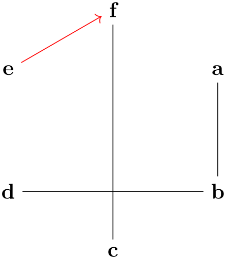

The TikZ and PGF Packages
Manual for version 3.1.10
Graph Drawing
36 The Algorithm Layer¶
by Till Tantau
36.1 Overview¶
The present section is addressed at readers interested in implementing new graph drawing algorithms for the graph drawing system. Obviously, in order to do so, you need to have an algorithm in mind and also some programming skills; but fortunately only in the Lua programming language: Even though the graph drawing system was originally developed as an extension of TikZ, is has been restructured so that the “algorithm layer” where you define algorithms is scrupulously separated from TikZ. In particular, an algorithm declared and implemented on this layer can be used in with every “display layers”, see Section 38, without change. Nevertheless, in the following we will use the TikZ display layer and syntax in our examples.
Normally, new graph drawing algorithms can and must be implemented in the Lua programming language, which is a small, easy-to-learn (and quite beautiful) language integrated into current versions of TeX. However, as explained in Section 37, you can also implement algorithms in C or C++ (and, possibly, in the future also in other languages), but this comes at a great cost concerning portability. In the present section, I assume that you are only interested in writing an algorithm using Lua.
In the following, after a small “hello world” example of graph drawing and a discussion of technical details like how to name files so that TeX will find them, we have a look at the main parts of the algorithm layer:
-
• Section 36.3 gives and overview of the available namespaces and also of naming conventions used in the graph drawing system.
-
• Section 36.4 explores what graph drawing scopes “look like on the algorithm layer”. As the graph of a graph drawing scope is being parsed on the display layer, a lot of information is gathered: The nodes and edges of the graph are identified and the object-oriented model is built, but other information is also collected. For instance, a sequence of events is created during the parsing process. As another example, numerous kinds of collections may be identified by the parser. The parsed graph together with the event sequence and the collections are all gathered in a single table, called the scope table of the current graph drawing scope. Algorithms can access this table to retrieve information that goes beyond the “pure” graph model.
One entry in this table is of particular importance: The syntactic digraph. While most graph drawing algorithms are not really interested in the “details” of how a graph was specified, for some algorithms it makes a big difference whether you write a -> b or b <- a in your specification of the graph. These algorithms can access the “fine details” of how the input graph was specified through the syntactic digraph; all other algorithms can access their digraph or ugraph fields and do not have to worry about the difference between a -> b and b <- a.
-
• Section 36.5 explains the object-oriented model of graphs used throughout the graph drawing system. Graph drawing algorithms do not get the “raw” specification used by the user to specify a graph (like {a -> {b,c}} in the graph syntax). Instead, what a graph drawing algorithm sees is “just” a graph object that provides methods for accessing the vertices and arcs.
-
• Section 36.6 explains how the information in the graph drawing scope is processed. One might expect that we simply run the algorithm selected by the user; however, things are more involved in practice. When the layout of a graph needs to be computed, only very few algorithms will actually be able to compute positions for the nodes of every graph. For instance, most algorithms implicitly assume that the input graph is connected; algorithms for computing layouts for trees assume that the input is, well, a tree; and so on. For this reason, graph drawing algorithms will not actually need the original input graph as their input, but some transformed version of it. Indeed, all graph drawing algorithms are treated as graph transformations by the graph drawing engine.
This section explains how transformations are chosen and which transformations are applied by default.
-
• Section 36.7 documents the interface-to-algorithm class. This interface encapsulates all that an algorithm “sees” of the graph drawing system (apart from the classes in model and lib).
-
• Section 36.8 provides a number of complete examples that show how graph drawing algorithms can, actually, be implemented.
-
• Section 36.9 documents the different libraries functions that come with the graph drawing engine. For instance, there are library functions for computing the (path) distance of nodes in a graph; a parameter that is needed by some algorithms.
36.2 Getting Started¶
In this section, a “hello world” example of a graph drawing algorithm is given, followed by an overview of the organization of the whole engine.
36.2.1 The Hello World of Graph Drawing¶
Let us start our tour of the algorithm layer with a “hello world” version of graph drawing: An algorithm that simply places all nodes of a graph in a circle of a fixed radius. Naturally, this is not a particularly impressive or intelligent graph drawing algorithm; but neither is the classical “hello world”\(\dots \) Here is a minimal version of the needed code (this is not the typical way of formulating the code, but it is the shortest; we will have a look at the more standard and verbose way in a moment):
pgf.gd.interface.InterfaceToAlgorithms.declare
{
key
=
"very
simple
demo
layout",
algorithm
= {
run
=
function
(self)
local
alpha
=
(2 * math.pi) /
#self.ugraph.vertices
for
i,vertex
in
ipairs(self.ugraph.vertices) do
vertex.pos.x
=
math.cos(i * alpha) *
25
vertex.pos.y
=
math.sin(i * alpha) *
25
end
end
}
}
This code declares a new algorithm (very simple demo layout) and includes an implementation of the algorithm (through the run field of the algorithm field). When the run method is called, the self parameter will contain the to-be-drawn graph in its ugraph field. It is now the job of the code to modify the positions of the vertices in this graph (in the example, this is done by assigning values to vertex.pos.x and vertex.pos.y).
In order to actually use the algorithm, the above code first needs to be executed somehow. For TikZ, one can just call \directlua on it or put it in a file and then use \directlua plus require (a better alternative) or you put it in a file like simpledemo.lua and use \usegdlibrary{simpledemo} (undoubtedly the “best” way). For another display layer, like a graphical editor, the code could also be executed through the use of require.
Executing the code “just” declares the algorithm, this is what the declare function does. Inside some internal tables, the algorithm layer will store the fact that a very simple demo layout is now available. The algorithm layer will also communicate with the display layer through the binding layer to advertise this fact to the “user”. In the case of TikZ, this means that the option key very simple demo layout becomes available at this point and we can use it like this:
It turns out, that our little algorithm is already more powerful than one might expect. Consider the following example:
Note that, in our algorithm, we “just” put all nodes on a circle around the origin. Nevertheless, the graph gets decomposed into two connected components, the components are rotated so that the edge from node 2 to node 3 goes from left to right and the edge from b to c goes up at an angle of \(45^\circ \), and the components are placed next to each other so that some spacing is achieved.
The “magic” that achieves all this behind the scenes is called “graph transformations”. They will heavily pre- and postprocess the input and output of graph drawing algorithms to achieve the above results.
Naturally, some algorithms may not wish their inputs and/or outputs to be “tampered” with. An algorithm can easily configure which transformations should be applied, by passing appropriate options to declare.
36.2.2 Declaring an Algorithm¶
Let us now have a look at how one would “really” implement the example algorithm. First of all, we place our algorithm in a separate file called, say, ExampleLayout.lua. This way, by putting it in a separate file, all display layers can easily install the algorithm at runtime by saying require "ExampleLayout".
Next, the declare function is needed quite often, so it makes sense to create a short local name for it:
The declare function is the work-horse of the algorithm layer. It takes a table that contains at least a key field, which must be a unique string, and some other fields that specify in more detail what kind of key is declared. Once declared through a call of declare, the “key” can be used on the display layer.
For declaring an algorithm, the table passed to declare must contain a field algorithm. This field, in turn, must (normally) be set to a table that will become the algorithm class. In the above example, our algorithm was so simple that we could place the whole definition of the class inside the call of declare, but normally the class is defined in more detail after the call to declare:
The effect of the declare will be that the table stored in ExampleClass is setup to form a class in the sense of object-oriented programming. In particular, a static new function is installed.
Now, whenever the user uses the key very simple demo layout on a graph, at some point the graph drawing engine will create a new instance of the ExampleClass using new and will then call the run method of this class. The class can have any number of other methods, but new and run are the only ones directly called by the graph drawing system.
36.2.3 The Run Method¶
The run method of an algorithm classes lies at the heart of any graph drawing algorithm. This method will be called whenever a graph needs to be laid out. Upon this call, the self object will have some important fields set:
-
• ugraph This stands for “undirected graph” and is the “undirected” version of the to-be-laid out graph. In this graph, whenever there is an arc between \(u\) and \(v\), there is also an arc between \(v\) and \(u\). It is obtained by considering the syntactic digraph and then “forgetting” about the actual direction of the edges.
When you have set certain preconditions in your algorithm class, like connected=true, the ugraph will satisfy these conditions. In particular, the ugraph typically will not be the underlying undirected graph of the complete syntactic digraph, but rather of some part of it. The use of (sub)layouts will also modify the syntactic digraph is fancy ways.
Refer to this graph whenever your algorithm is “most comfortable” with an undirected graph, as is the case for instance for most force-base algorithms.
-
• digraph This stands for “directed graph” and is the “semantically directed” version of the to-be-laid out graph. Basically, when happens is that reverse edges in the syntactic digraph (an edge like b <- a) will yield an Arc from a to b in the digraph while they yield a b to a arc and edge in the syntactic digraph. Also, undirected edges like a -- b are replaced by directed edges in both directions between the vertices.
-
• scope The graph drawing scope.
-
• layout The layout object for this graph. This is a collection of kind layout.
36.2.4 Loading Algorithms on Demand¶
In order to use the very simple demo layout on the display layer, declare must have been called for this key. However, we just saw that the declare function takes the actual class table as parameter and, thus, whenever an algorithm is declared, it is also completely loaded and compiled at this point.
This is not always desirable. A user may wish to include a number of libraries in order to declare a large number of potentially useful algorithms, but will not actually use all of them. Indeed, at least for large, complex algorithms, it is preferable that the algorithm’s code is loaded only when the algorithm is used for the first time.
Such a “loading of algorithms on demand” is supported through the option of setting the algorithm field in a declare to a string. This string must now be the file name of a Lua file that contains the code of the actual algorithm. When the key is actually used for the first time, this file will be loaded. It must return a table that will be plugged into the algorithm field; so subsequent usages of the key will not load the file again.
The net effect of all this is that you can place implementations of algorithms in files separate from interface files that just contain the declare commands for these algorithms. You will typically do this only for rather large algorithms.
For our example, the code would look like this:
36.2.5 Declaring Options¶
Let us now make our example algorithm a bit more “configurable”. For this, we use declare once more, but instead of the algorithm field, we use a type field. This tells the display layer that the key is not used to select an algorithm, but to configure “something” about the graph or about nodes or edges.
In our example, we may wish to configure the radius of the graph. So, we introduce a radius key (actually, this key already exists, so we would not need to declare it, but let us do so anyway for example purposes):
This tells the display layer that there is now an option called radius, that users set it to some “length”, and that if it is not set at all, then the 25pt should be used.
To access what the user has specified for this key, an algorithm can access the options field of a graph, vertex, or arc at the key’s name:
36.2.6 Adding Inline Documentation¶
You should always document the keys you declare. For this, the declare function allows you to add three fields to its argument table:
-
• summary This should be a string that succinctly summarizes the effect this key has. The idea is that this text will be shown as a “tooltip” in a graphical editor or will be printed out by a command line tool when a user requests help about the key. You can profit from using Lua’s [[ and ]] syntax for specifying multi-line strings.
Also, when the file containing the key is parsed for this manual, this text will be shown.
-
• documentation When present, this field contains a more extensive documentation of the key. It will also be shown in this manual, but typically not as a tool tip.
-
• examples This should either be a single string or an array of strings. Each string should be an example demonstrating how the key is used in TikZ. They will all be included in the manual, each surrounded by a codeexample environment.
Let us augment our radius key with some documentation. The three dashes before the declare are only needed when the declaration is part of this manual and they will trigger an inclusion of the key in the manual.
---
declare
{
key
=
"radius",
type
=
"length",
initial
=
"25pt",
summary
= [[
Specifies the radius of a circle on which the nodes are
placed when
the |very simple example layout| is used. Each vertex can
have a
different radius.
]],
examples
= [[
\tikz \graph [very simple example layout, radius=2cm] {
a
--
b
--
c
--
d
--
e;
};
]]
}
As a courtesy, all of the strings given in the documentation can start and end with quotation marks, which will be removed. (This helps syntax highlighting with editors that do not recognize the [[ to ]] syntax.) Also, the indentation of the strings is removed (we compute the minimum number of leading spaces on any line and remove this many spaces from all lines).
36.2.7 Adding External Documentation¶
As an alternative to inlining documentation, you can also store the documentation of keys in a separate file that is loaded only when the documentation is actually accessed. Since this happens only rarely (for instance, not at all, when TikZ is run, except for this manual), this will save time and space. Also, for C code, it is impractical to store multi-line documentation strings directly in the C file.
In order to store documentation externally, instead of the summary, documentation, and examples keys, you provide the key documentation_in. The documentation_in key must be set to a string that is input using require.
In detail, when someone tries to access the summary, documentation, or examples field of a key and these keys are not (yet) defined, the system checks whether the documentation_in key is set. If so, we apply require to the string stored in this field. The file loaded in this way can now setup the missing fields of the current key and, typically, also of all other keys defined in the same file as the current key. For this purpose, it is advisable to use the pgf.gd.doc class:
-
Lua table doc (declared in pgf.gd.doc)
-
1. In the declare statement of the key, you do not provide fields like documentation or summary. Rather, you provide the field documentation_in, which gets the name of a Lua file the will be read whenever one of the fields documentation, summary, or examples is requested for the key.
-
2. When the key is requested, require will be applied to the filename given in the documentation_in field.
-
3. In this file, you start with the following code:
local doc = require 'pgf.gd.doc'
local key = doc.key
local documentation = doc.documentation
local summary = doc.summary
local example = doc.example
This will setup nice shortcuts for the commands you are going to use in your file.
-
4. Next, for each to-be-lazily-documented key, add a block to the file like the following:
Note that [[ and ]] are used in Lua for raw multi-line strings.
The effect of the above code will be that for the key my radius the different field like summary or documentation get updated. The key function simple “selects” a key and subsequent commands like summary will update this key until a different key is selected through another use of key.
The table doc is used for documentation purposes. It is used to provide lazy documentation for keys, that is, to install documentation for keys only when this information is requested and when the documentation is kept in a separate file.
Using the doc facility is easy:
Alphabetical method summary:
-
function doc.key(key)
Selects the key which will be subsequently updated by the other functions of this class.
Parameters: 1. key A key.
-
function doc.summary(string)
Updates (replaces) the summary field of the last key selected through the key command.
Parameters: 1. string A (new) summary string.
-
function doc.documentation(string)
Updates (replaces) the documentation field of the last key selected through the key command.
Parameters: 1. string A (new) documentation string. Typically, the [[ syntax will be used to specify this string.
-
function doc.example(string)
Adds an example to the examples field of the last key selected through the key command.
Parameters: 1. string An additional example string.
As a longer example, consider the following declarations:
The file documentation_file.lua would look like this:
--
File
documentation_file.lua
local
key
=
require
'pgf.gd.doc'.key
local
documentation
=
require
'pgf.gd.doc'.documentation
local
summary
=
require
'pgf.gd.doc'.summary
local
example
=
require
'pgf.gd.doc'.example
key
"very
simple
demo
layout"
documentation
"This
layout
is
a
very
simple
layout
that, ..."
key
"radius"
summary
"Specifies
the
radius
of
a
circle
on
which
the
nodes
are
placed."
documentation
[[
This key can be used together with |very simple example
layout|. An
important feature is that...
]]
example
[[
\tikz \graph [very simple example layout, radius=2cm]
{ a
--
b
--
c
--
d
--
e; };
]]
36.3 Namespaces and File Names¶
36.3.1 Namespaces¶
All parts of the graphdrawing library reside in the Lua “namespace” pgf.gd, which is itself a “sub-namespace” of pgf. For your own algorithms, you are free to place them in whatever namespace you like; only for the official distribution of pgf everything has been put into the correct namespace.
Let us now have a more detailed look at these namespaces. A namespace is just a Lua table, and sub-namespaces are just subtables of namespace tables. Following the Java convention, namespaces are in lowercase letters. The following namespaces are part of the core of the graph drawing engine:
-
• pgf This namespace is the main namespace of pgf. Other parts of pgf and TikZ that also employ Lua should put an entry into this table. Since, currently, only the graph drawing engine adheres to this rule, this namespace is declared inside the graph drawing directory, but this will change.
The pgf table is the only entry into the global table of Lua generated by the graph drawing engine (or, pgf, for that matter). If you intend to extend the graph drawing engine, do not even think of polluting the global namespace. You will be fined.
-
• pgf.gd This namespace is the main namespace of the graph drawing engine, including the object-oriented models of graphs and the layout pipeline. Algorithms that are part of the distribution are also inside this namespace, but if you write your own algorithms you do not need place them inside this namespace. (Indeed, you probably should not before they are made part of the official distribution.)
-
• pgf.gd.interface This namespace handles, on the one hand, the communication between the algorithm layer and the binding layer and, on the other hand, the communication between the display layer (TikZ) and the binding layer.
-
• pgf.gd.binding So-called “bindings” between display layers and the graph drawing system reside in this namespace.
-
• pgf.gd.lib Numerous useful classes that “make an algorithm’s your life easier” are collected in this namespace. Examples are a class for decomposing a graph into connected components or a class for computing the ideal distance between two sibling nodes in a tree, taking all sorts of rotations and separation parameters into account.
-
• pgf.gd.model This namespace contains all Lua classes that are part of the object-oriented model of graphs employed throughout the graph drawing engine. For readers familiar with the model–view–controller pattern: This is the namespace containing the model-part of this pattern.
-
• pgf.gd.control This namespace contains the “control logic” of the graph drawing system. It will transform graphs according to rules, disassemble layouts and sublayouts and will call the appropriate algorithms. For readers still familiar with the model–view–controller pattern: This is the namespace containing the control-part of this pattern.
-
• pgf.gd.trees This namespace contains classes that are useful for dealing with graphs that are trees. In particular, it contains a class for computing a spanning tree of an arbitrary connected graph; an operation that is an important preprocessing step for many algorithms.
In addition to providing “utility functions for trees”, the namespace also includes actual algorithms for computing graph layouts like pgf.gd.trees.ReingoldTilford1981. It may seem to be a bit of an “impurity” that a namespace mixes utility classes and “real” algorithms, but experience has shown that it is better to keep things together in this way.
Concluding the analogy to the model–view–controller pattern, a graph drawing algorithm is, in a loose sense, the “view” part of the pattern.
-
• pgf.gd.layered This namespace provides classes and functions for “layered” layouts; the Sugiyama layout method being the most well-known one. Again, the namespace contains both algorithms to be used by a user and utility functions.
-
• pgf.gd.force Collects force-based algorithms and, again, also utility functions and classes.
-
• pgf.gd.examples Contains some example algorithms. They are not intended to be used directly, rather they should serve as inspirations for readers wishing to implement their own algorithms.
There are further namespaces that also reside in the pgf.gd namespace, these namespaces are used to organize different graph drawing algorithms into categories.
In Lua, similarly to Java, when a class SomeClass is part of, say, the namespace pgf.gd.example, it is customary to put the class’s code in a file SomeClass.lua and then put this class in a directory example, that is a subdirectory of a directory gd, which is in turn a subdirectory of a directory pgf. When you write require "pgf.gd.example.SomeClass" the so-called loader will turn this into a request for the file pgf/gd/example/SomeClass.lua (for Unix systems).
36.3.2 Defining and Using Namespaces and Classes¶
There are a number of rules concerning the structure and naming of namespaces as well as the naming of files. Let us start with the rules for naming namespaces, classes, and functions. They follow the “Java convention”:
-
1. A namespace is a short lowercase word.
-
2. A function in a namespace is in lowercase_with_underscores_between_words.
-
3. A class name is in CamelCaseWithAnUppercaseFirstLetter.
-
4. A class method name is in camelCaseWithALowercaseFirstLetter.
From Lua’s point of view, every namespace and every class is just a table. However, since these tables will be loaded using Lua’s require function, each namespace and each class must be placed inside a separate file (unless you modify the package.loaded table, but, then, you know what you are doing anyway). Inside such a file, you should first declare a local variable whose name is the name of the namespace or class that you intend to define and then assign a (possibly empty) table to this variable:
Next, you should add your class to the encompassing namespace. This is achieved as follows:
require("pgf.gd.example").SomeClass
=
SomeClass
The reason this works is that the require will return the table that is the namespace pgf.gd.example. So, inside this namespace, the SomeClass field will be filled with the table stored in the local variable of the same name – which happens to be the table representing the class.
At the end of the file, you must write
return
SomeClass
This ensures that the table that is defined in this file gets stored by Lua in the right places. Note that you need and should not use Lua’s module command. The reason is that this command has disappeared in the new version of Lua and that it is not really needed.
Users of your class can import and use your class by writing:
...
local
SomeClass
=
require
"pgf.gd.examples.SomeClass"
...
36.4 The Graph Drawing Scope¶
-
Lua table Scope (declared in pgf.gd.interface.Scope)
-
Field syntactic_digraph
-
Field events
-
Field node_names
-
Field coroutine
-
Field collections
In theory, graph drawing algorithms take graphs as input and output graphs embedded into the plane as output. In practice, however, the input to a graph drawing algorithm is not “just” the graph. Rather, additional information about the graph, in particular about the way the user specified the graph, is also important to many graph drawing algorithms.
The graph drawing system gathers both the original input graph as well as all additional information that is provided in the graph drawing scope inside a scope table. The object has a number of fields that inform an algorithm about the input.
For each graph drawing scope, a new Scope object is created. Graph drawing scopes are kept track of using a stack, but only the top of this stack is available to the interface classes.
The syntactic digraph is a digraph that faithfully encodes the way the input graph is represented syntactically. However, this does not mean that the syntactic digraph contains the actual textual representation of the input graph. Rather, when an edge is specified as, say, a <- b, the syntactic digraph will contains an arc from a to b with an edge object attached to it that is labeled as a “backward” edge. Similarly, an edge a -- b is also stored as a directed arc from a to b with the label -- attached to it. Algorithms will often be more interested graphs derived from the syntactic digraph such as its underlying undirected graph. These derived graphs are made accessible by the graph drawing engine during the preprocessing.
An array of Event objects. These objects, see the Event class for details, are created during the parsing of the input graph.
A table that maps the names of nodes to node objects. Every node must have a unique name.
A Lua coroutine that is used internally to allow callbacks to the display layer to be issued deep down during a run of an algorithm.
The collections specified inside the scope, see the Collection class.
Alphabetical method summary:
-
function Scope.new(initial)
Create a new Scope object.
Parameters: 1. initial A table of initial values for the newly created Scope object.
Returns: 1. The new scope object.
36.5 The Model Classes¶
All that a graph drawing algorithm will “see” of the graph specified by the user is a “graph object”. Such an object is an object-oriented model of the user’s graph that no longer encodes the specific way in which the user specified the graph; it only encodes which nodes and edges are present. For instance, the TikZ graph specification
and the graph specification
will generate exactly the same graph object.
-
Lua namespace pgf.gd.model
This namespace contains the classes modeling graphs, nodes, and edges. Also, the Coordinate class is found here, since coordinates are also part of the modeling.
36.5.1 Directed Graphs (Digraphs)¶
Inside the graph drawing engine, the only model of a graph that is available treats graphs as
-
1. directed (all edges have a designated head and a designated tail) and
-
2. simple (there can be at most one edge between any pair of nodes).
These two properties may appear to be somewhat at odds with what users can specify as graphs and with what some graph drawing algorithms might expect as input. For instance, suppose a user writes
graph
{ a
--
b
--[red] c, b
--[green, bend right] c
}
In this case, it seems that the input graph for a graph drawing algorithm should actually be an undirected graph in which there are multiple edges (namely \(2\)) between b and c. Nevertheless, the graph drawing engine will turn the user’s input a directed simple graph in ways described later. You do not need to worry that information gets lost during this process: The syntactic digraph, which is available to graph drawing algorithms on request, stores all the information about which edges are present in the original input graph.
The main reasons for only considering directed, simple graphs are speed and simplicity: The implementation of these graphs has been optimized so that all operations on these graphs have a guaranteed running time that is small in practice.
-
Lua table Digraph (declared in pgf.gd.model.Digraph)
-
• Adding an array of \(k\) vertices using the add method needs time \(O(k)\).
-
• Adding an arc between two vertices needs time \(O(1)\).
-
• Accessing both the vertices and the arcs fields takes time \(O(1)\), provided only the above operations are used.
-
• Deleting the vertices given in an array of \(k\) vertices from a graph with \(n\) vertices takes time \(O(\max \{n,c\})\) where \(c\) is the number of arcs between the to-be-deleted nodes and the remaining nodes. Note that this time bound in independent of \(k\). In particular, it will be much faster to delete many vertices by once calling the remove function instead of calling it repeatedly.
-
• Deleting an arc takes time \(O(t_o+h_i)\) where \(t_o\) is the number of outgoing arcs at the arc’s tail and \(h_i\) is the number of incoming arcs at the arc’s head. After a call to disconnect, the next use of the arcs field will take time \(O(|V| + |E|)\), while subsequent accesses take time \(O(1)\) – till the next use of disconnect. This means that once you start deleting arcs using disconnect, you should perform as many additional disconnects as possible before accessing arcs one more.
-
Field vertices
-
Field arcs
-
Field syntactic_digraph
-
Field options
Each Digraph instance models a directed, simple graph. “Directed” means that all edges “point” from a head node to a tail node. “Simple” means that between any nodes there can be (at most) one edge. Since these properties are a bit at odds with the normal behavior of “nodes” and “edges” in TikZ, different names are used for them inside the model namespace: The class modeling “edges” is actually called Arc to stress that an arc has a specific “start” (the tail) and a specific “end” (the head). The class modeling “nodes” is actually called Vertex, just to stress that this is not a direct model of a TikZ node, but can represent a arbitrary vertex of a graph, independently of whether it is an actual node in TikZ.
Time Bounds. Since digraphs are constantly created and modified inside the graph drawing engine, some care was taken to ensure that all operations work as quickly as possible. In particular:
Deleting vertices and arcs takes more time:
Stability. The vertices field and the array returned by Digraph:incoming and Digraph:outgoing are stable in the following sense: The ordering of the elements when you use ipairs on the will be the ordering in which the vertices or arcs were added to the graph. Even when you remove a vertex or an arc, the ordering of the remaining elements stays the same.
This array contains the vertices that are part of the digraph. Internally, this array is an object of type LookupTable, but you can mostly treat it as if it were an array. In particular, you can iterate over its elements using ipairs, but you may not modify the array; use the add and remove methods, instead.
It is important to note that although each digraph stores a vertices array, the elements in this array are not exclusive to the digraph: A vertex can be an element of any number of digraphs. Whether or not a vertex is an element of digraph is not stored in the vertex, only in the vertices array of the digraph. To test whether a digraph contains a specific node, use the contains method, which takes time \(O(1)\) to perform the test (this is because, as mentioned earlier, the vertices array is actually a LookupTable and for each vertex v the field vertices[v] will be true if, and only if, v is an element of the vertices array).
Do not use pairs(g.vertices) because this may cause your graph drawing algorithm to produce different outputs on different runs.
A slightly annoying effect of vertices being able to belong to several graphs at the same time is that the set of arcs incident to a vertex is not a property of the vertex, but rather of the graph. In other words, to get a list of all arcs whose tail is a given vertex v, you cannot say something like v.outgoings or perhaps v:getOutgoings(). Rather, you have to say g:outgoing(v) to get this list:
Naturally, there is also a method g:incoming().
To iterate over all arcs of a graph you can say:
However, it will often be more convenient and, in case the there are far less arcs than vertices, also faster to write
For any two vertices t and h of a graph, there may or may not be an arc from t to h. If this is the case, there is an Arc object that represents this arc. Note that, since Digraphs are always simple graphs, there can be at most one such object for every pair of vertices. However, you can store any information you like for an Arc through a Storage, see the Storage class for details. Each Arc for an edge of the syntactic digraph stores an array called syntactic_edges of all the multiple edges that are present in the user’s input.
Unlike vertices, the arc objects of a graph are always local to a graph; an Arc object can never be part of two digraphs at the same time. For this reason, while for vertices it makes sense to create Vertex objects independently of any Digraph objects, it is not possible to instantiate an Arc directly: only the Digraph method connect is allowed to create new Arc objects and it will return any existing arcs instead of creating new ones, if there is already an arc present between two nodes.
The arcs field of a digraph contains a LookupTable of all arc objects present in the Digraph. Although you can access this field normally and use it in ipairs to iterate over all arcs of a graph, note that this array is actually “reconstructed lazily” whenever an arc is deleted from the graph. What happens is the following: As long as you just add arcs to a graph, the arcs array gets updated normally. However, when you remove an arc from a graph, the arc does not get removed from the arcs array (which would be an expensive operation). Instead, the arcs array is invalidated (internally set to nil), allowing us to perform a disconnect in time \(O(1)\). The arcs array is then ignored until the next time it is accessed, for instance when a user says ipairs(g.arcs). At this point, the arcs array is reconstructed by adding all arcs of all nodes to it.
The bottom line of the behavior of the arcs field is that (a) the ordering of the elements may change abruptly whenever you remove an arc from a graph and (b) performing \(k\) disconnect operations in sequence takes time \(O(k)\), provided you do not access the arcs field between calls.
is a reference to the syntactic digraph from which this graph stems ultimately. This may be a cyclic reference to the graph itself.
If present, it will be a table storing the options set for the syntactic digraph.
Alphabetical method summary:
function Digraph.new (initial)
function Digraph:__tostring ()
function Digraph:arc (tail, head)
function Digraph:collapse (collapse_vertices, collapse_vertex, vertex_fun, arc_fun)
function Digraph:connect (s, t)
function Digraph:disconnect (v, t)
function Digraph:expand (vertex, vertex_fun, arc_fun)
function Digraph:orderIncoming (v, vertices)
function Digraph:orderOutgoing (v, vertices)
function Digraph:reconnect (arc, tail, head)
function Digraph:remove (array)
function Digraph:sortIncoming (v, f)
-
function Digraph.new(initial)
Graphs are created using the new method, which takes a table of initial values as input (like most new methods in the graph drawing system). It is permissible that this table of initial values has a vertices field, in which case this array will be copied. In contrast, an arcs field in the table will be ignored – newly created graphs always have an empty arcs set. This means that writing Digraph.new(g) where g is a graph creates a new graph whose vertex set is the same as g’s, but where there are no edges:
local
g
=
Digraph.new
{}
g:add
{ v1, v2, v3
}
g:connect
(v1, v2)
local
h
=
Digraph.new
(g)
assert
(h:contains(v1))
assert
(not h:arc(v1, v2))
To completely copy a graph, including all arcs, you have to write:
This operation takes time \(O(1)\).
Parameters: 1. initial A table of initial values. It is permissible that this array contains a vertices field. In this case, this field must be an array and its entries must be nodes, which will be inserted. If initial has an arcs field, this field will be ignored. The table must contain a field syntactic_digraph, which should normally be the syntactic digraph of the graph, but may also be the string "self", in which case it will be set to the newly created (syntactic) digraph.
Returns: 1. A newly-allocated digraph.
-
function Digraph:add(array)
Add vertices to a digraph.
This operation takes time \(O(|\verb !array!|)\).
Parameters: 1. array An array of to-be-added vertices.
-
function Digraph:remove(array)
Remove vertices from a digraph.
This operation removes an array of vertices from a graph. The operation takes time linear in the number of vertices, regardless of how many vertices are to be removed. Thus, it will be (much) faster to delete many vertices by first compiling them in an array and to then delete them using one call to this method.
This operation takes time \(O(\max \{|\verb !array!|, |\verb !self.vertices!|\})\).
Parameters: 1. array The to-be-removed vertices.
-
function Digraph:contains(v)
Test, whether a graph contains a given vertex.
This operation takes time \(O(1)\).
Parameters: 1. v The vertex to be tested.
-
function Digraph:arc(tail, head)
Returns the arc between two nodes, provided it exists. Otherwise, nil is returned.
This operation takes time \(O(1)\).
Parameters: 1. tail The tail vertex 2. head The head vertex
Returns: 1. The arc object connecting them
-
function Digraph:outgoing(v)
Returns an array containing the outgoing arcs of a vertex. You may only iterate over his array using ipairs, not using pairs.
This operation takes time \(O(1)\).
Parameters: 1. v The vertex
Returns: 1. An array of all outgoing arcs of this vertex (all arcs whose tail is the vertex)
-
function Digraph:sortOutgoing(v, f)
Sorts the array of outgoing arcs of a vertex. This allows you to later iterate over the outgoing arcs in a specific order.
This operation takes time \(O(|\verb !outgoing!| \log |\verb !outgoings!|)\).
Parameters: 1. v The vertex 2. f A comparison function that is passed to table.sort
-
function Digraph:orderOutgoing(v, vertices)
Reorders the array of outgoing arcs of a vertex. The parameter array must contain the same set of vertices as the outgoing array, but possibly in a different order.
This operation takes time \(O(|\verb !outgoing!|)\), where outgoing is the array of v’s outgoing arcs in self.
Parameters: 1. v The vertex 2. vertices An array containing the outgoing vertices in some order.
-
function Digraph:incoming(v)
See outgoing.
-
function Digraph:sortIncoming(v, f)
See sortOutgoing.
-
function Digraph:orderIncoming(v, vertices)
See orderOutgoing.
-
function Digraph:connect(s, t)
Connects two nodes by an arc and returns the newly created arc object. If they are already connected, the existing arc is returned.
This operation takes time \(O(1)\).
Parameters: 1. s The tail vertex 2. t The head vertex (may be identical to tail in case of a loop)
Returns: 1. The arc object connecting them (either newly created or already existing)
-
function Digraph:disconnect(v, t)
Disconnect either a single vertex v from all its neighbors (remove all incoming and outgoing arcs of this vertex) or, in case two nodes are given as parameter, remove the arc between them, if it exists.
This operation takes time \(O(|I_v| + |I_t|)\), where \(I_x\) is the set of vertices incident to \(x\), to remove the single arc between \(v\) and \(v\). For a single vertex \(v\), it takes time \(O(\sum _{y: \text {there is some arc between $v$ and $y$ or $y$ and $v$}} |I_y|)\).
Parameters: 1. v The single vertex or the tail vertex 2. t The head vertex
-
function Digraph:reconnect(arc, tail, head)
An arc is changed so that instead of connecting self.tail and self.head, it now connects a new head and tail. The difference to first disconnecting and then reconnecting is that all fields of the arc (other than head and tail, of course), will be “moved along”. Reconnecting an arc in the same way as before has no effect.
If there is already an arc at the new position, fields of the to-be-reconnected arc overwrite fields of the original arc. This is especially dangerous with a syntactic digraph, so do not reconnect arcs of the syntactic digraph (which you should not do anyway).
The arc object may no longer be valid after a reconnect, but the operation returns the new arc object.
This operation needs the time of a disconnect (if necessary).
Parameters: 1. arc The original arc object 2. tail The new tail vertex 3. head The new head vertex
Returns: 1. The new arc object connecting them (either newly created or already existing)
-
function Digraph:collapse(collapse_vertices, collapse_vertex, vertex_fun, arc_fun)
Collapse a set of vertices into a single vertex
Often, algorithms will wish to treat a whole set of vertices “as a single vertex”. The idea is that a new vertex is then inserted into the graph, and this vertex is connected to all vertices to which any of the original vertices used to be connected.
The collapse method takes an array of to-be-collapsed vertices as well as a vertex. First, it will store references to the to-be-collapsed vertices inside the vertex. Second, we iterate over all arcs of the to-be-collapsed vertices. If this arc connects a to-be-collapsed vertex with a not-to-be-collapsed vertex, the not-to-be-collapsed vertex is connected to the collapse vertex. Additionally, the arc is stored at the vertex.
Note that the collapse vertex will be added to the graph if it is not already an element. The collapsed vertices will not be removed from the graph, so you must remove them yourself, if necessary.
A collapse vertex will store the collapsed vertices so that you can call expand later on to “restore” the vertices and arcs that were saved during a collapse. This storage is not local to the graph in which the collapse occurred.
Parameters: 1. collapse_vertices An array of to-be-collapsed vertices 2. collapse_vertex The vertex that represents the collapse. If missing, a vertex will be created automatically and added to the graph. 3. vertex_fun This function is called for each to-be-collapsed vertex. The parameters are the collapse vertex and the to-be-collapsed vertex. May be nil. 4. arc_fun This function is called whenever a new arc is added between rep and some other vertex. The arguments are the new arc and the original arc. May be nil.
Returns: 1. The new vertex that represents the collapsed vertices.
-
function Digraph:expand(vertex, vertex_fun, arc_fun)
Expand a previously collapsed vertex.
If you have collapsed a set of vertices in a graph using collapse, you can expand this set once more using this method. It will add all vertices that were previously removed from the graph and will also reinstall the deleted arcs. The collapse vertex is not removed.
Parameters: 1. vertex A to-be-expanded vertex that was previously returned by collapse. 2. vertex_fun A function that is called once for each reinserted vertex. The parameters are the collapse vertex and the reinstalled vertex. May be nil. 3. arc_fun A function that is called once for each reinserted arc. The parameter is the arc and the vertex. May be nil.
-
function Digraph:sync()
Invokes the sync method for all arcs of the graph.
See also: Arc:sync()
-
function Digraph:__tostring()
Computes a string representation of this graph including all nodes and edges. The syntax of this representation is such that it can be used directly in TikZ’s graph syntax.
Returns: 1. self as string.
36.5.2 Vertices¶
-
Lua table Vertex (declared in pgf.gd.model.Vertex)
-
Field pos
-
Field name
-
Field path
-
Field anchors
-
Field options
-
Field animations
-
Field shape
-
Field kind
-
Field event
-
Field incomings
-
Field outgoings
A Vertex instance models a node of graphs. Each Vertex object can be an element of any number of graphs (whereas an Arc object can only be an element of a single graph).
When a vertex is added to a digraph g, two tables are created in the vertex’ storage: An array of incoming arcs (with respect to g) and an array of outgoing arcs (again, with respect to g). The fields are managed by the Digraph class and should not be modified directly.
Note that a Vertex is an abstraction of TikZ nodes; indeed the objective is to ensure that, in principle, we can use them independently of TeX. For this reason, you will not find any references to tex inside a Vertex; this information is only available in the syntactic digraph.
One important aspect of vertices are its anchors – a concept well familiar for users of TikZ, but since we need to abstract from TikZ, a separate anchor management is available inside the graph drawing system. It works as follows:
First of all, every vertex has a path, which is a (typically closed) line around the vertex. The display system will pass down the vertex’ path to the graph drawing system and this path will be stored as a Path object in the path field of the vertex. This path lives in a special “local” coordinate system, that is, all coordinates of this path should actually be considered relative to the vertex’ pos field. Note that the path is typically, but not always, “centered” on the origin. A graph drawing algorithm should arrange the vertices in such a way that the origins in the path coordinate systems are aligned.
To illustrate the difference between the origin and the vertex center, consider a tree drawing algorithm in which a node root has three children a, b, and g. Now, if we were to simply center these three letters vertically and arrange them in a line, the letters would appear to “jump up and down” since the height of the three letters are quite different. A solution is to shift the letters (and, thus, the paths of the vertices) in such a way that in all three letters the baseline of the letters is exactly at the origin. Now, when a graph drawing algorithm aligns these vertices along the origins, the letters will all have the same baseline.
Apart from the origin, there may be other positions in the path coordinate system that are of interest – such as the center of the vertex. As mentioned above, this need not be the origin and although a graph drawing algorithm should align the origins, edges between vertices should head toward these vertex centers rather that toward the origins. Other points of interest might be the “top” of the node.
All points of special interest are called “anchors”. The anchor method allows you to retrieve them. By default, you always have access to the center anchor, but other anchors may or may not be available also, see the anchor method for details.
A coordinate object that stores the position where the vertex should be placed on the canvas. The main objective of graph drawing algorithms is to update this coordinate.
An optional string that is used as a textual representation of the node.
The path of the vertex’s shape. This is a path along the outer line resulting from stroking the vertex’s original shape. For instance, if you have a quadratic shape of size 1cm and you stroke the path with a pen of 2mm thickness, this path field would store a path of a square of edge length 12mm.
A table of anchors (in the TikZ sense). The table is indexed by the anchor names (strings) and the values are Coordinates. Currently, it is only guaranteed that the center anchor is present. Note that the center anchor need not lie at the origin: A graph drawing system should align nodes relative to the origin of the path’s coordinate system. However, lines going to and from the node will head towards the center anchor. See Section 28.8 for details.
A table of options that contains user-defined options.
An array of attribute animations for the node. When an algorithm adds entries to this array, the display layer should try to render these. The syntax is as follows: Each element in the array is a table with a field attribute, which must be a string like "opacity" or "translate", a field entries, which must be an array to be explained in a moment, and field options, which must be a table of the same syntax as the options field. For the entries array, each element must be table with two field: t must be set to a number, representing a time in seconds, and value, which must be set to a value that the attribute should have at the given time. The entries and the options will then be interpreted as described in pgf’s basic layer animation system, except that where a \pgfpoint is expected you provide a Coordinate and a where a path is expected you provide a Path.
A string describing the shape of the node (like rectangle or circle). Note, however, that this is more “informative”; the actual information that is used by the graph drawing system for determining the extent of a node, its bounding box, convex hull, and line intersections is the path field.
A string describing the kind of the node. For instance, a node of type "dummy" does not correspond to any real node in the graph but is used by the graph drawing algorithm.
The Event when this vertex was created (may be nil if the vertex is not part of the syntactic digraph).
A table indexed by Digraph objects. For each digraph, the table entry is an array of all vertices from which there is an Arc to this vertex. This field is internal and may not only be accessed by the Digraph class.
Like incomings, but for outgoing arcs.
Alphabetical method summary:
-
function Vertex.new(values)
Create a new vertex. The initial parameter allows you to setup some initial values.
Usage:
Parameters: 1. initial Values to override default node settings. The following are permissible:
pos Initial position of the node. name The name of the node. It is optional to define this. path A Path object representing the vertex’s hull. anchors A table of anchors. options An options table for the vertex. animations An array of generated animation attributes. shape A string describing the shape. If not given, "none" is used. kind A kind like "node" or "dummy". If not given, "dummy" is used.
Returns: 1. A newly allocated node.
-
function Vertex:boundingBox()
Returns a bounding box of a vertex.
Returns: 1. min_x The minimum \(x\) value of the bounding box of the path
Returns: 1. min_y The minimum \(y\) value
Returns: 1. max_x
Returns: 1. max_y
Returns: 1. center_x The center of the bounding box
Returns: 1. center_y
-
function Vertex:anchor(anchor)
Returns an anchor position in a vertex. First, we try to look the anchor up in the vertex’s anchors table. If it is not found there, we test whether it is one of the direction strings north, south east, and so on. If so, we consider a line from the center of the node to the position on the bounding box that corresponds to the given direction (so south east would be the lower right corner). We intersect this line with the vertex’s path and return the result. Finally, if the above fails, we try to consider the anchor as a number and return the intersection of a line starting at the vertex’s center with the number as its angle and the path of the vertex.
Parameters: 1. anchor An anchor as detailed above
Returns: 1. A coordinate in the vertex’s local coordinate system (so add the pos field to arrive at the actual position). If the anchor was not found, nil is returned
36.5.3 Arcs¶
-
Lua table Arc (declared in pgf.gd.model.Arc)
-
Field tail
-
Field head
-
Field path
-
Field generated_options
-
Field animations
-
Field syntactic_edges
An arc is a light-weight object representing an arc from a vertex in a graph to another vertex. You may not create an Arc by yourself, which is why there is no new method, arc creation is done by the Digraph class.
Every arc belongs to exactly one graph. If you want the same arc in another graph, you need to newly connect two vertices in the other graph.
You may read the head and tail fields, but you may not write them. In order to store data for an arc, use Storage objects.
Between any two vertices of a graph there can be only one arc, so all digraphs are always simple graphs. However, in the specification of a graph (the syntactic digraph), there might be multiple edges between two vertices. This means, in particular, that an arc has no options field. Rather, it has several optionsXxxx functions, that will search for options in all of the syntactic edges that “belong” to an edge.
In order to set options of the edges, you can set the generated_options field of an arc (which is nil by default), see the declare_parameter_sequence function for the syntax. Similar to the path field below, the options set in this table are written back to the syntactic edges during a sync.
Finally, there is also an animations field, which, similarly to the generated_options, gets written back during a sync when it is not nil.
In detail, the following happens: Even though an arc has a path, generated_options, and animations fields, setting these fields does not immediately set the paths of the syntactic edges nor does it generate options. Indeed, you will normally want to setup and modify the path field of an arc during your algorithm and only at the very end, “write it back” to the multiple syntactic edges underlying the graph. For this purpose, the method sync is used, which is called automatically for the ugraph and digraph of a scope as well as for spanning trees.
The bottom line concerning the path field is the following: If you just want a straight line along an arc, just leave the field as it is (namely, nil). If you want to have all edges along a path to follow a certain path, set the path field of the arc to the path you desire (typically, using the setPolylinePath or a similar method). This will cause all syntactic edges underlying the arc to be set to the specified path. In the event that you want to set different paths for the edges underlying a single arc differently, set the path fields of these edges and set the path field of the arc to nil. This will disable the syncing for the arc and will cause the edge paths to remain untouched.
The tail vertex of the arc.
The head vertex of the arc. May be the same as the tail in case of a loop.
If non-nil, the path of the arc. See the description above.
If non-nil, some options to be passed back to the original syntactic edges, see the description above.
If non-nil, some animations to be passed back to the original syntactic edges. See the description of the animations field for Vertex for details on the syntax.
In case this arc is an arc in the syntactic digraph (and only then), this field contains an array containing syntactic edges (“real” edges in the syntactic digraph) that underly this arc. Otherwise, the field will be empty or nil.
Alphabetical method summary:
function Arc:headAnchorForArcPath ()
function Arc:optionsAccumulated (option, accumulator, only_aligned)
function Arc:optionsArray (option)
function Arc:options (option, only_aligned)
function Arc:setPolylinePath (coordinates)
-
function Arc:optionsArray(option)
Get an array of options of the syntactic edges corresponding to an arc.
An arc in a digraph is typically (but not always) present because there are one or more edges in the syntactic digraph between the tail and the head of the arc or between the head and the tail.
Since for every arc there can be several edges present in the syntactic digraph, an option like length may have been given multiple times for the edges corresponding to the arc.
If your algorithm gets confused by multiple edges, try saying a:options(your_option). This will always give the “most sensible” choice of the option if there are multiple edges corresponding to the same arc.
Parameters: 1. option A string option like "length".
Returns: 1. A table with the following contents:
1. It is an array of all values the option has for edges corresponding to self in the syntactic digraph. Suppose, for instance, you write the following:
Suppose, furthermore, that length has been setup as an edge option. Now suppose that a is the arc from the vertex tail to the vertex head. Calling a:optionsArray('length') will yield the array part {1,3,2,8,7}. The reason for the ordering is as follows: First come all values length had for syntactic edges going from self.tail to self.head in the order they appear in the graph description. Then come all values the options has for syntactic edges going from self.head to self.tail. The reason for this slightly strange behavior is that many algorithms do not really care whether someone writes a --[length=1] b or b --[length=1] a; in both cases they would “just” like to know that the length is 1.
2. There is field called aligned, which is an array storing the actual syntactic edge objects whose values can be found in the array part of the returned table. However, aligned contains only the syntactic edges pointing “in the same direction” as the arc, that is, the tail and head of the syntactic edge are the same as those of the arc. In the above example, this array would contain the edges with the comment numbers 1, 2, and 6.
Using the length of this array and the fact that the “aligned” values come first in the table, you can easily iterate over the option’s values of only those edges that are aligned with the arc:
3. There is a field called anti_aligned, which is an array containing exactly the edges in the array part of the table not aligned with the arc. The numbering start at 1 as usual, so the \(i\)th entry of this table corresponds to the entry at position \(i + \verb !#opt.aligned!\) of the table.
-
function Arc:options(option, only_aligned)
Returns the first option, that is, the first entry of Arc:optionsArray(option). However, if the only_aligned parameter is set to true and there is no option with any aligned syntactic edge, nil is returned.
Parameters: 1. option An option 2. only_aligned If true, only aligned syntactic edges will be considered.
Returns: 1. The first entry of the optionsArray
-
function Arc:optionsAccumulated(option, accumulator, only_aligned)
Get an accumulated value of an option of the syntactic edges corresponding to an arc.
Parameters: 1. option The option of interest 2. accumulator A function taking two values. When there are more than one syntactic edges corresponding to self for which the option is set, this function will be called repeatedly for the different values. The first time it will be called for the first two values. Next, it will be called for the result of this call and the third value, and so on. 3. only_aligned A boolean. If true, only the aligned syntactic edges will be considered.
Returns: 1. If the option is not set for any (aligned) syntactic edges corresponding to self, nil is returned. If there is exactly one edge, the value of this edge is returned. Otherwise, the result of repeatedly applying the accumulator function as described above.
The result is cached, repeated calls will not invoke the accumulator function again.
Usage: Here is typical usage:
-
function Arc:syntacticTailAndHead()
Compute the syntactic head and tail of an arc. For this, we have a look at the syntactic digraph underlying the arc. If there is at least once syntactic edge going from the arc’s tail to the arc’s head, the arc’s tail and head are returned. Otherwise, we test whether there is a syntactic edge in the other direction and, if so, return head and tail in reverse order. Finally, if there is no syntactic edge at all corresponding to the arc in either direction, nil is returned.
Returns: 1. The syntactic tail
Returns: 1. The syntactic head
-
function Arc:pointCloud()
Compute the point cloud.
Returns: 1. This method will return the “point cloud” of an arc, which is an array of all points that must be rotated and shifted along with the endpoints of an edge.
-
function Arc:eventIndex()
Compute an event index for the arc.
Returns: 1. The lowest event index of any edge involved in the arc (or nil, if there is no syntactic edge).
-
function Arc:spanPriority()
-
1. If the option "span priority" is set, this number will be used.
-
2. If the edge has the same head as the arc, we lookup the key
"span priority " .. edge.direction. If set, we use this value. -
3. If the edge has a different head from the arc (the arc is “reversed” with respect to the syntactic edge), we lookup the key "span priority reversed " .. edge.direction. If set, we use this value.
-
4. Otherwise, we use priority 5.
The span collector
This method returns the top (that is, smallest) priority of any edge involved in the arc.
The priority of an edge is computed as follows:
Returns: 1. The priority of the arc, as described above.
-
function Arc:sync()
Sync an Arc with its syntactic edges with respect to the path and generated options. It causes the following to happen: If the path field of the arc is nil, nothing happens with respect to the path. Otherwise, a copy of the path is created. However, for every path element that is a function, this function is invoked with the syntactic edge as its parameter. The result of this call should now be a Coordinate, which will replace the function in the Path.
You use this method like this:
...
local
arc
=
g:connect(s,t)
arc:setPolylinePath
{ Coordinate.new(x,y), Coordinate.new(x1,y1) }
...
arc:sync()
Next, similar to the path, the field generated_options is considered. If it is not nil, then all options listed in this field are appended to all syntactic edges underlying the arc.
Note that this function will automatically be called for all arcs of the ugraph, the digraph, and the spanning_tree of an algorithm by the rendering pipeline.
-
function Arc:tailAnchorForArcPath()
This method returns a “coordinate factory” that can be used as the coordinate of a moveto at the beginning of a path starting at the tail of the arc. Suppose you want to create a path starting at the tail vertex, going to the coordinate \((10,10)\) and ending at the head vertex. The trouble is that when you create the path corresponding to this route, you typically do not know where the tail vertex is going to be. Even if that has already been settled, you will still have the problem that different edges underlying the arc may wish to start their paths at different anchors inside the tail vertex. In such cases, you use this method to get a function that will, later on, compute the correct position of the anchor as needed.
Here is the code you would use to create the above-mentioned path:
Normally, however, you will not write code as detailed as the above and you would just write instead of the last three lines:
arc:setPolylinePath
{ Coordinate.new
(10, 10) }
-
function Arc:headAnchorForArcPath()
See Arc:tailAnchorForArcPath.
-
function Arc:setPolylinePath(coordinates)
Setup the path field of an arc in such a way that it corresponds to a sequence of straight line segments starting at the tail’s anchor and ending at the head’s anchor.
Parameters: 1. coordinates An array of Coordinates through which the line will go through.
36.5.4 Edges¶
-
Lua table Edge (declared in pgf.gd.model.Edge)
-
1. "->"
-
2. "--"
-
3. "<-"
-
4. "<->"
-
5. "-!-"
-
Field head
-
Field tail
-
Field event
-
Field options
-
Field direction
-
Field path
-
Field generated_options
-
Field animations
An Edge is a “syntactic” connection between two vertices that represents a connection present in the syntactic digraph. Unlike an Arc, Edge objects are not controlled by the Digraph class. Also unlike Arc objects, there can be several edges between the same vertices, namely whenever several such edges are present in the syntactic digraph.
In detail, the relationship between arcs and edges is as follows: If there is an Edge between two vertices \(u\) and \(v\) in the syntactic digraph, there will be an Arc from \(u\) to \(v\) and the array syntactic_edges of this Arc object will contain the Edge object. In particular, if there are several edges between the same vertices, all of these edges will be part of the array in a single Arc object.
Edges, like arcs, are always directed from a tail vertex to a head vertex; this is true even for undirected vertices. The tail vertex will always be the vertex that came first in the syntactic specification of the edge, the head vertex is the second one. Whether an edge is directed or not depends on the direction of the edge, which may be one of the following:
The head vertex of this edge.
The tail vertex of this edge.
The creation Event of this edge.
A table of options that contains user-defined options.
One of the directions named above.
A Path object that describes the path of the edge. The path’s coordinates are interpreted absolutely.
This is an options array that is generated by the algorithm. When the edge is rendered later on, this array will be passed back to the display layer. The syntax is the same as for the declare_parameter_sequence function, see InterfaceToAlgorithms.
An array of animations, see the animations field of the Vertex class for the syntax.
Alphabetical method summary:
function Edge:headAnchorForEdgePath ()
-
function Edge.new(values)
Create a new edge. The initial parameter allows you to setup some initial values.
Usage:
local
v
=
Edge.new
{ tail
=
v1, head
=
v2
}
Parameters: 1. initial Values to override defaults. –
Returns: 1. A new edge object.
-
function Edge:tailAnchorForEdgePath()
This method returns a “coordinate factory” that can be used as the coordinate of a moveto at the beginning of a path starting at the tail of the arc. Suppose you want to create a path starting at the tail vertex, going to the coordinate \((10,10)\) and ending at the head vertex. The trouble is that when you create the path corresponding to this route, you typically do not know where the tail vertex is going to be. In this case, you use this method to get a function that will, later on, compute the correct position of the anchor as needed.
Note that you typically do not use this function, but use the corresponding function of the Arc class. Use this function only if there are multiple edges between two vertices that need to be routed differently.
Here is the code you would use to create the above-mentioned path:
local
a
=
g:connect(tail,head)
local
e
=
a.syntactic_edges[1]
...
e.path
=
Path.new()
e.path:appendMoveto(e:tailAnchorForEdgePath())
e.path:appendLineto(10, 10)
e.path:appendLineto(e:headAnchorForEdgePath())
As for the Arc class, you can also setup a polyline more easily:
e:setPolylinePath
{ Coordinate.new
(10, 10) }
-
function Edge:headAnchorForEdgePath()
See Arc:tailAnchorForArcPath.
-
function Edge:setPolylinePath(coordinates)
Setup the path field of an edge in such a way that it corresponds to a sequence of straight line segments starting at the tail’s anchor and ending at the head’s anchor.
Parameters: 1. coordinates An array of Coordinates through which the line will go through.
36.5.5 Collections¶
-
Lua table Collection (declared in pgf.gd.model.Collection)
-
Field kind
-
Field vertices
-
Field edges
-
Field options
-
Field child_collections
-
Field parent_collection
-
Field event
A collection is essentially a subgraph of a graph, that is, a “collection” of some nodes and some edges of the graph. The name “collection” was chosen over “subgraph” since the latter are often thought of as parts of a graph that are rendered in a special way (such as being surrounded by a rectangle), while collections are used to model such diverse things as hyperedges, sets of vertices that should be on the same level in a layered algorithm, or, indeed, subgraphs that are rendered in a special way.
Collections are grouped into “kinds”. All collections of a given kind can be accessed by algorithms through an array whose elements are the collections. On the display layer, for each kind a separate key is available to indicate that a node or an edge belongs to a collection.
Collections serve two purposes: First, they can be seen as “hints” to graph drawing algorithms that certain nodes and/or edges “belong together”. For instance, collections of kind same layer are used by the Sugiyama algorithm to group together nodes that should appear at the same height of the output. Second, since collections are also passed back to the display layer in a postprocessing step, they can be used to render complicated concepts such as hyperedges (which are just collections of nodes, after all) or subgraphs.
The “kind” of the collection.
A lookup table of vertices (that is, both an array with the vertices in the order in which they appear as well as a table such that vertices[vertex] == true whenever vertex is present in the table.
A lookup table of edges (not arcs!).
An options table. This is the table of options that was in force when the collection was created.
An array of all collections that are direct children of this collection (that is, they were defined while the current collection was the most recently defined collection on the options stack). However, you should use the methods children, descendants, and so to access this field.
The parent collection of the current collection. This field may be nil in case a collection has no parent.
An Event object that was create for this collection. Its kind will be "collection" while its parameter will be the collection kind.
Alphabetical method summary:
function Collection:childrenOfKind (kind)
function Collection:children ()
-
function Collection.new(t)
Creates a new collection. You should not call this function directly, it is called by the interface classes.
Parameters: 1. t A table of initial values. The field t.kind must be a nonempty string.
Returns: 1. The new collection
-
function Collection:children()
A collection can have any number of child collections, which are collections nested inside the collection. You can access the array of these children through this method. You may not modify the array returned by this function.
Returns: 1. The array of children of self.
-
function Collection:childrenOfKind(kind)
This method works like the children method. However, the tree of collections is, conceptually, contracted by considering only these collections that have the kind given as parameter. For instance, if self has a child collection of a kind different from kind, but this child collection has, in turn, a child collection of kind kind, this latter child collection will be included in the array – but not any of its child collections.
Parameters: 1. kind The collection kind to which the tree of collections should be restricted.
Returns: 1. The array of children of self in this contracted tree.
-
function Collection:descendants()
The descendants of a collection are its children, plus their children, plus their children, and so on.
Returns: 1. An array of all descendants of self. It will be in preorder.
-
function Collection:descendantsOfKind(kind)
The descendants of a collection of the given kind.
Parameters: 1. kind A collection kind.
Returns: 1. An array of all descendants of self of the given kind.
36.5.6 Coordinates, Paths, and Transformations¶
-
Lua table Coordinate (declared in pgf.gd.model.Coordinate)
-
Field x
-
Field y
A Coordinate models a position on the drawing canvas.
It has an x field and a y field, which are numbers that will be interpreted as TeX points (1/72.27th of an inch). The \(x\)-axis goes right and the \(y\)-axis goes up.
There is also a static field called origin that is always equal to the origin.
Alphabetical method summary:
function Coordinate.__add (a,b)
function Coordinate.__div (a,b)
function Coordinate.__mul (a,b)
function Coordinate.__sub (a,b)
function Coordinate.boundingBox (array)
function Coordinate:moveTowards (c,f)
function Coordinate:normalized ()
function Coordinate:normalize ()
function Coordinate:shiftByCoordinate (c)
function Coordinate:shift (a,b)
-
function Coordinate.new(x,y)
Creates a new coordinate.
Parameters: 1. x The \(x\) value 2. y The \(y\) value
Returns: 1. A coordinate
-
function Coordinate:clone()
Creates a new coordinate that is a copy of an existing one.
Returns: 1. A new coordinate at the same location as self
-
function Coordinate:apply(t)
Apply a transformation matrix to a coordinate, see pgf.gd.lib.Transform for details.
Parameters: 1. t A transformation.
-
function Coordinate:shift(a,b)
Shift a coordinate
Parameters: 1. a An \(x\) offset 2. b A \(y\) offset
-
function Coordinate:unshift(a,b)
“Unshift” a coordinate (which is the same as shifting by the inversed coordinate; only faster).
Parameters: 1. a An \(x\) offset 2. b A \(y\) offset
-
function Coordinate:shiftByCoordinate(c)
Like shift, only for coordinate parameters.
Parameters: 1. c Another coordinate. The \(x\)- and \(y\)-values of self are increased by the \(x\)- and \(y\)-values of this coordinate.
-
function Coordinate:unshiftByCoordinate(c)
Like unshift, only for coordinate parameters.
Parameters: 1. c Another coordinate.
-
function Coordinate:moveTowards(c,f)
Moves the coordinate a fraction of f along a straight line to c.
Parameters: 1. c Another coordinate 2. f A fraction
-
function Coordinate:scale(s)
Scale a coordinate by a factor
Parameters: 1. s A factor.
-
function Coordinate.__add(a,b)
Add two coordinates, yielding a new coordinate. Note that it will be a lot faster to call shift, whenever this is possible.
Parameters: 1. a A coordinate 2. b A coordinate
-
function Coordinate.__sub(a,b)
Subtract two coordinates, yielding a new coordinate. Note that it will be a lot faster to call unshift, whenever this is possible.
Parameters: 1. a A coordinate 2. b A coordinate
-
function Coordinate.__unm(a)
The unary minus (mirror the coordinate against the origin).
Parameters: 1. a A coordinate
-
function Coordinate.__mul(a,b)
The multiplication operator. Its effect depends on the parameters: If both are coordinates, their dot-product is returned. If exactly one of them is a coordinate and the other is a number, the scalar multiple of this coordinate is returned.
Parameters: 1. a A coordinate or a scalar 2. b A coordinate or a scalar
Returns: 1. The dot product or scalar product.
-
function Coordinate.__div(a,b)
The division operator. Returns the scalar division of a coordinate by a scalar.
Parameters: 1. a A coordinate 2. b A scalar (not equal to zero).
Returns: 1. The scalar product or a * (1/b).
-
function Coordinate:norm()
The norm function. Returns the norm of a coordinate.
Parameters: 1. a A coordinate
Returns: 1. The norm of the coordinate
-
function Coordinate:normalize()
Normalize a vector: Ensure that it has length 1. If the vector used to be the 0-vector, it gets replaced by (1,0).
-
function Coordinate:normalized()
Normalized version of a vector: Like normalize, only the result is returned in a new vector.
Returns: 1. Normalized version of self
-
function Coordinate.boundingBox(array)
Compute a bounding box around an array of coordinates
Parameters: 1. array An array of coordinates
Returns: 1. min_x The minimum \(x\) value of the bounding box of the array
Returns: 1. min_y The minimum \(y\) value
Returns: 1. max_x
Returns: 1. max_y
Returns: 1. center_x The center of the bounding box
Returns: 1. center_y
-
Lua table Path (declared in pgf.gd.model.Path)
-
• "moveto" The line’s path should stop at the current position and then start anew at the next coordinate in the array.
-
• "lineto" The line should continue from the current position to the next coordinate in the array.
-
• "curveto" The line should continue form the current position with a Bézier curve that is specified by the next three Coordinate objects (in the usual manner).
-
• "closepath" The line’s path should be “closed” in the sense that the current subpath that was started with the most recent moveto operation should now form a closed curve.
A Path models a path in the plane.
Following the PostScript/pdf/svg convention, a path consists of a series of path segments, each of which can be closed or not. Each path segment, in turn, consists of a series of Bézier curves and straight line segments; see Section 14 for an introduction to paths in general.
A Path object is a table whose array part stores Coordinate objects, strings, and functions that describe the path of the edge. The following strings are allowed in this array:
Instead of a Coordinate, a Path may also contain a function. In this case, the function, when called, must return the Coordinate that is “meant” by the position. This allows algorithms to add coordinates to a path that are still not fixed at the moment they are added to the path.
Alphabetical method summary:
function Path:appendArcTo (target,radius_or_center,clockwise,trans)
function Path:appendArc (start_angle,end_angle,radius,trans)
function Path:appendClosepath ()
function Path:appendCurveto (a,b,c,d,e,f)
function Path:appendLineto (x,y)
function Path:appendMoveto (x,y)
function Path:cutAtBeginning (index, time)
function Path:cutAtEnd (index, time)
function Path:intersectionsWith (path)
-
function Path.new(initial)
Creates an empty path.
Parameters: 1. initial A table containing an array of strings and coordinates that constitute the path. Coordinates may be given as tables or as a pair of numbers. In this case, each pair of numbers is converted into one coordinate. If omitted, a new empty path is created.
Returns: 1. A empty Path
-
function Path:clone()
Creates a copy of a path.
Returns: 1. A copy of the path
-
function Path:reversed()
Returns the path in reverse order.
Returns: 1. A copy of the reversed path
-
function Path:transform(t)
Transform all points on a path.
Parameters: 1. t A transformation, see pgf.gd.lib.Transform. It is applied to all Coordinate objects on the path.
-
function Path:shift(x,y)
Shift all points on a path.
Parameters: 1. x An \(x\)-shift 2. y A \(y\)-shift
-
function Path:shiftByCoordinate(x)
Shift by all points on a path.
Parameters: 1. x A coordinate
-
function Path:clear()
Makes the path empty.
-
function Path:appendMoveto(x,y)
Appends a moveto to the path.
Parameters: 1. x A Coordinate or function or, if the y parameter is not nil, a number that is the \(x\)-part of a coordinate. 2. y The \(y\)-part of the coordinate.
-
function Path:appendLineto(x,y)
Appends a lineto to the path.
Parameters: 1. x A Coordinate or function, if the y parameter is not nil, a number that is the \(x\)-part of a coordinate. 2. y The \(y\)-part of the coordinate.
-
function Path:appendClosepath()
Appends a closepath to the path.
-
function Path:appendCurveto(a,b,c,d,e,f)
Appends a curveto to the path. There can be either three coordinates (or functions) as parameters (the two support points and the target) or six numbers, where two consecutive numbers form a Coordinate. Which case is meant is detected by the presence of a sixth non-nil parameter.
-
function Path:makeRigid()
Makes a path “rigid”, meaning that all coordinates that are only given as functions are replaced by the values these functions yield.
-
function Path:coordinates()
Returns an array of all coordinates that are present in a path. This means, essentially, that all strings are filtered out.
Returns: 1. An array of all coordinate objects on the path.
-
function Path:boundingBox()
Returns a bounding box of the path. This will not necessarily be the minimal bounding box in case the path contains curves because, then, the support points of the curve are used for the computation rather than the actual bounding box of the path.
If the path contains no coordinates, all return values are 0.
Returns: 1. min_x The minimum \(x\) value of the bounding box of the path
Returns: 1. min_y The minimum \(y\) value
Returns: 1. max_x
Returns: 1. max_y
Returns: 1. center_x The center of the bounding box
Returns: 1. center_y
-
function Path:intersectionsWith(path)
Computes all intersections of a path with another path and returns them as an array of coordinates. The intersections will be sorted “along the path self”. The implementation uses a divide-and-conquer approach that should be reasonably fast in practice.
Parameters: 1. path Another path
Returns: 1. Array of all intersections of path with self in the order they appear on self. Each entry of this array is a table with the following fields:
• index The index of the segment in self where the intersection occurs. • time The “time” at which a point traveling along the segment from its start point to its end point. • point The point itself.
-
function Path:cutAtBeginning(index, time)
Shorten a path at the beginning. We are given the index of a segment inside the path as well as a point in time along this segment. The path is now shortened so that everything before this segment and everything in the segment before the given time is removed from the path.
Parameters: 1. index The index of a path segment. 2. time A time along the specified path segment.
-
function Path:cutAtEnd(index, time)
Shorten a path at the end. This method works like cutAtBeginning, only the path is cut at the end.
Parameters: 1. index The index of a path segment. 2. time A time along the specified path segment.
-
function Path:pad(padding)
“Pads” the path. The idea is the following: Suppose we stroke the path with a pen whose width is twice the value padding. The outer edge of this stroked drawing is now a path by itself. The path will be a bit longer and “larger”. The present function tries to compute an approximation to this resulting path.
The algorithm used to compute the enlarged part does not necessarily compute the precise new path. It should work correctly for polyline paths, but not for curved paths.
Parameters: 1. padding A padding distance.
Returns: 1. The padded path.
-
function Path:appendArc(start_angle,end_angle,radius,trans)
Appends an arc (as in the sense of “a part of the circumference of a circle”) to the path. You may optionally provide a transformation matrix, which will be applied to the arc. In detail, the following happens: We first invert the transformation and apply it to the start point. Then we compute the arc “normally”, as if no transformation matrix were present. Then we apply the transformation matrix to all computed points.
Parameters: 1. start_angle The start angle of the arc. Must be specified in degrees. 2. end_angle the end angle of the arc. 3. radius The radius of the circle on which this arc lies. 4. trans A transformation matrix. If nil, the identity matrix will be assumed.
-
function Path:appendArcTo(target,radius_or_center,clockwise,trans)
Appends a clockwise arc (as in the sense of “a part of the circumference of a circle”) to the path such that it ends at a given point. If a transformation matrix is given, both start and end point are first transformed according to the inverted transformation, then the arc is computed and then transformed back.
Parameters: 1. target The point where the arc should end. 2. radius_or_center If a number, it is the radius of the circle on which this arc lies. If it is a Coordinate, this is the center of the circle. 3. clockwise If true, the arc will be clockwise. Otherwise (the default, if nothing or nil is given), the arc will be counter clockwise. 4. trans A transformation matrix. If missing, the identity matrix is assumed.
-
Lua table Transform (declared in pgf.gd.lib.Transform)
The Transform table provides a set of static methods for creating and handling canvas transformation matrices. Such a matrix is actually just an array of six numbers. The idea is that “applying” an array a, b, c, d, e, f a vector \((x,y)\) will yield the new vector \((ax+by+e,cx+dy+f)\). For details on how such matrices work, see Section 108.2.1
Alphabetical method summary:
function Transform.concat (a,b)
function Transform.new_rotation (angle)
function Transform.new_scaling (x_scale, y_scale)
-
function Transform.new(a,b,c,d,x,y)
Creates a new transformation array.
Parameters: 1. a First component 2. b Second component 3. c Third component 4. d Fourth component 5. x The x shift 6. y The y shift
Returns: 1. A transformation object.
-
function Transform.new_shift(x,y)
Creates a new transformation object that represents a shift.
Parameters: 1. x An x-shift 2. y A y-shift
Returns: 1. A transformation object
-
function Transform.new_rotation(angle)
Creates a new transformation object that represents a rotation.
Parameters: 1. angle An angle
Returns: 1. A transformation object
-
function Transform.new_scaling(x_scale, y_scale)
Creates a new transformation object that represents a scaling.
Parameters: 1. x The horizontal scaling 2. y The vertical scaling (if missing, the horizontal scaling is used)
Returns: 1. A transformation object
-
function Transform.concat(a,b)
Concatenate two transformation matrices, returning the new one.
Parameters: 1. a The first transformation 2. b The second transformation
Returns: 1. The transformation representing first applying b and then applying a.
-
function Transform.invert(t)
Inverts a transformation matrix.
Parameters: 1. t The transformation.
Returns: 1. The inverted transformation
36.5.7 Options and Data Storages for Vertices, Arcs, and Digraphs¶
Many objects in the graph drawing system have an options table attached to them. These tables will contain the different kinds options specified by the user for the object. For efficiency reasons, many objects may share the same options table (since, more often than not, almost all objects have exactly the same options table). For this reason, you cannot store anything in an options table, indeed, you should never attempt to write anything into an options table. Instead, you should use a Storage.
-
Lua table Storage (declared in pgf.gd.lib.Storage)
A storage is an object that, as the name suggests, allows you to “store stuff concerning objects.” Basically, it behaves like table having weak keys, which means that once the objects for which you “store stuff” go out of scope, they are also removed from the storage. Also, you can specify that for each object of the storage you store a table. In this case, there is no need to initialize this table for each object; rather, when you write into such a table and it does not yet exist, it is created “on the fly”.
The typical way you use storages is best explained with the following example: Suppose you want to write a depth-first search algorithm for a graph. This algorithm might wish to mark all nodes it has visited. It could just say v.marked = true, but this might clash with someone else also using the marked key. The solution is to create a marked storage. The algorithm can first say
local
marked
=
Storage.new()
and then say
marked[v] =
true
to mark its objects. The marked storage object does not need to be created locally inside a function, you can declare it as a local variable of the whole file; nevertheless, the entries for vertices no longer in use get removed automatically. You can also make it a member variable of the algorithm class, which allows you make the information about which objects are marked globally accessible.
Now suppose the algorithm would like to store even more stuff in the storage. For this, we might use a table and can use the fact that a storage will automatically create a table when necessary:
Again, once v goes out of scope, both it and the info table will removed.
Alphabetical method summary:
-
function Storage.new()
Create a new storage object.
Returns: 1. A new Storage instance.
-
function Storage.newTableStorage()
Create a new storage object which will install a table for every entry automatically.
Returns: 1. A new Storage instance.
36.5.8 Events¶
-
Lua table Event (declared in pgf.gd.lib.Event)
-
node When a node of the input graph has been parsed and a Vertex object has been created for it, an event with kind node is created. The parameter of this event is the just-created vertex.
The same kind of event is used to indicate “missing” nodes. In this case, the parameters field is nil.
-
edge When an edge of the input graph has been parsed, an event is created of kind edge. The parameters field will store an array with two entries: The first is the Arc object whose syntactic_edges field stores the edge. The second is the index of the edge inside the syntactic_edges field.
-
begin Signals the beginning of a group, which will be ended with a corresponding end event later on. The parameters field will indicate the kind of group. Currently, only the string "descendants" is used as parameters, indicating the start of several nodes that are descendants of a given node. This information can be used by algorithms for reconstructing the input structure of trees.
-
end Signals the end of a group begun by a begin event earlier on.
-
Field kind
-
Field parameters
-
Field index
Events are used to communicate “interesting” events from the parser to the graph drawing algorithms.
As a syntactic description of some graph is being parsed, vertices, arcs, and a digraph object representing this graph get constructed. However, even though syntactic annotations such as options for the vertices and arcs are attached to them and can be accessed through the graph objects, some syntactic information is neither represented in the digraph object nor in the vertices and the arcs. A typical example is a “missing” node in a tree: Since it is missing, there is neither a vertex object nor arc objects representing it. It is also not a global option of the graph.
For these reasons, in addition to the digraph object itself, additional information can be passed by a parser to graph drawing algorithms through the means of events. Each Event consists of a kind field, which is just some string, and a parameters field, which stores additional, kind-specific information. As a graph is being parsed, a string of events is accumulated and is later on available through the events field of the graph drawing scope.
The following events are created during the parsing process by the standard parsers of TikZ:
A string representing the kind of the events.
Kind-specific parameters.
A number that stores the events logical position in the sequence of events. The number need not be an integer array index.
Alphabetical method summary:
-
function Event.new(values)
Create a new event object
Parameters: 1. initial Initial fields of the new event.
Returns: 1. The new object
36.6 Graph Transformations¶
36.6.1 The Layout Pipeline¶
-
Lua table LayoutPipeline (declared in pgf.gd.control.LayoutPipeline)
-
• connected
If this property is set for an algorithm (that is, in the declare statement for the algorithm the predconditions field has the entry connected=true set), then the graph will be decomposed into connected components. The algorithm is run on each component individually.
-
• tree
When set, the field spanning_tree of the algorithm will be set to a spanning tree of the graph. This option implies connected.
-
• loop_free
When set, all loops (arcs from a vertex to itself) will have been removed when the algorithm runs.
-
• at_least_two_nodes
When explicitly set to false (this precondition is true by default), the algorithm will even be run if there is only a single vertex in the graph.
-
• upward_oriented
When set, the algorithm tells the layout pipeline that the graph has been laid out in a layered manner with each layer going from left to right and layers at a whole going upwards (positive \(y\)-coordinates). The graph will then be rotated and possibly swapped in accordance with the grow key set by the user.
-
• fixed
When set, no rotational postprocessing will be done after the algorithm has run. Usually, a graph is rotated to meet a user’s orient settings. However, when the algorithm has already “ideally” rotated the graph, set this postcondition.
-
1. If specified, the graph is decomposed into connected components and the following steps are applied to each component individually.
-
2. All algorithms in the phase stack for the phase preprocessing are applied to the component. These algorithms are run one after the other in the order they appear in the phase stack.
-
3. If necessary, the spanning tree is now computed and rotational information is gathered.
-
4. The single algorithm in phase main is called.
-
5. All algorithms in the phase stack for the phase edge routing are run.
-
6. All algorithms in the phase stack for phase postprocessing are run.
-
7. Edge syncing, orientation, and anchoring are applied.
This class controls the running of graph drawing algorithms on graphs. In particular, it performs pre- and posttransformations and also invokes the collapsing of sublayouts.
You do not call any of the methods of this class directly, the whole class is included only for documentation purposes.
Before an algorithm is applied, a number of transformations will have been applied, depending on the algorithm’s preconditions field:
Once the algorithm has run, the algorithm’s postconditions will be processed:
In addition to the above-described always-present and automatic transformations, users may also specify additional pre- and posttransformations. This happens when users install additional algorithms in appropriate phases. In detail, the following happens in order:
If sublayouts are used, all of the above (except for anchoring) happens for each sublayout.
Alphabetical method summary:
function LayoutPipeline.anchor (graph, scope)
function LayoutPipeline.cutEdges (graph)
function LayoutPipeline.decompose (digraph)
function LayoutPipeline.orient (rotation_info, postconditions, graph, scope)
function LayoutPipeline.packComponents (syntactic_digraph, components)
function LayoutPipeline.prepareBoundingBoxes (rotation_info, adjusted_bb, graph, vertices)
function LayoutPipeline.prepareRotateAround (postconditions, graph)
-
function LayoutPipeline.anchor(graph, scope)
This function is called internally to perform the graph anchoring procedure described in Section 28.4. These transformations are always performed.
Parameters: 1. graph A graph 2. scope The scope
-
function LayoutPipeline.prepareRotateAround(postconditions, graph)
This method tries to determine in which direction the graph is supposed to grow and in which direction the algorithm will grow the graph. These two pieces of information together produce a necessary rotation around some node. This rotation is returned in a table.
Note that this method does not actually cause a rotation to happen; this is left to other method.
Parameters: 1. postconditions The algorithm’s postconditions. 2. graph An undirected graph
Returns: 1. A table containing the computed information.
-
function LayoutPipeline.prepareBoundingBoxes(rotation_info, adjusted_bb, graph, vertices)
-
• sibling_pre,
-
• sibling_post,
-
• layer_pre, and
-
• layer_post,
Compute growth-adjusted node sizes.
For each node of the graph, compute bounding box of the node that results when the node is rotated so that it is in the correct orientation for what the algorithm assumes.
The “bounding box” actually consists of the fields
which correspond to “min x”, “min y”, “min y”, and “max y” for a tree growing up.
The computation of the “bounding box” treats a centered circle in a special way, all other shapes are currently treated like a rectangle.
Parameters: 1. rotation_info The table computed by the function prepareRotateAround 2. packing_storage A storage in which the computed distances are stored. 3. graph An graph 4. vertices An array of to-be-prepared vertices inside graph
-
function LayoutPipeline.orient(rotation_info, postconditions, graph, scope)
Performs a post-layout orientation of the graph by performing the steps documented in Section 28.5.
Parameters: 1. rotation_info The info record computed by the function prepareRotateAround. 2. postconditions The algorithm’s postconditions. 3. graph A to-be-oriented graph. 4. scope The graph drawing scope.
-
function LayoutPipeline.decompose(digraph)
This internal function is called to decompose a graph into its components. Whether or not this function is called depends on whether the precondition connected is set for the algorithm class and whether the componentwise key is used.
Parameters: 1. graph A to-be-decomposed graph
Returns: 1. An array of graph objects that represent the connected components of the graph.
-
function LayoutPipeline.packComponents(syntactic_digraph, components)
This internal function packs the components of a graph. See Section 28.7 for details.
Parameters: 1. graph The graph 2. components A list of components
-
function LayoutPipeline.cutEdges(graph)
Cut the edges. This function handles the “cutting” of edges. The idea is that every edge is a path going from the center of the from node to the center of the target node. Now, we intersect this path with the path of the start node and cut away everything before this intersection. Likewise, we intersect the path with the head node and, again, cut away everything following the intersection.
These cuttings are not done if appropriate options are set.
36.6.2 Hints For Edge Routing¶
-
Lua table Hints (declared in pgf.gd.routing.Hints)
The Hints class provides a way for graph drawing algorithms to communicate certain possibilities concerning the routing of edges to edge routing algorithms. This partly decouples the choice of the vertex positioning algorithms from the choice of edge routing algorithm. For instance, for a simple necklace routing, it is unclear whether the edges on the necklace should be routing “along the necklace” or not. Thus, necklace routing algorithms will “hint” that a necklace is present and only when the necklace routing algorithm is selected will these hints lead to actual bending of edges.
For each kind of hint, there are methods in this class for creating the hints and other methods for reading them. Hints are always local to the ugraph.
Alphabetical method summary:
function Hints.addNecklaceCircleHint (ugraph, necklace, center, clockwise)
-
function Hints.addNecklaceCircleHint(ugraph, necklace, center, clockwise)
Adds a necklace hint. In this case, the hint indicates that the given sequence of vertices lie on a circle.
The idea is that an algorithm may specify that in a given graph certain sequences of nodes form a “necklace”, which is typically a circle. There may be more than one necklace inside a given graph. For each necklace, whenever an arc connects subsequent nodes on the necklace, they get bend in such a way that they lie follow the path of the necklace. If an arc lies on more than one necklace, the “last one wins”.
Parameters: 1. ugraph The ugraph to which this hint is added 2. necklace The sequence of vertices that form the necklace. If the necklace is closed, the last vertex must equal the first one. 3. center If provided, must be Coordinate that specifies the center of the circle on which the vertices lie. If not provided, the origin is assumed. 4. clockwise If true, the vertices are in clockwise order, otherwise in counter-clockwise order.
-
function Hints.getNecklaceHints(ugraph)
Gets the necklace hints.
This function will return an array whose entries are necklace hints. Each entry in the array has a necklace field, which is the field passed to the addNecklaceXxxx methods. For a circle necklace, the center and clockwise fields will be set. (Other necklaces are not yet implemented.)
Parameters: 1. ugraph The ugraph for which the necklace hints are requested.
Returns: 1. The array of necklaces as described above.
36.7 The Interface To Algorithms¶
-
Lua table InterfaceToAlgorithms (declared in pgf.gd.interface.InterfaceToAlgorithms)
This class provides the interface between the graph drawing system and algorithms. Another class, InterfaceToDisplay, binds the display layers (like TikZ or a graph drawing editor) to the graph drawing system “from the other side”.
The functions declared here can be used by algorithms to communicate with the graph drawing system, which will usually forward the “requests” of the algorithms to the display layers in some way. For instance, when you declare a new parameter, this parameter will become available on the display layer.
Alphabetical method summary:
function InterfaceToAlgorithms.addHandler (test, handler)
function InterfaceToAlgorithms.createEdge (algorithm, tail, head, init)
function InterfaceToAlgorithms.createVertex (algorithm, init)
-
function InterfaceToAlgorithms.addHandler(test, handler)
Adds a handler for the declare function. The declare command is just a “dispatcher” to one of many possible declaration functions. Which function is used, depends on which fields are present in the table passed to declare. For each registered handler, we call the test function. If it returns neither nil nor false, the handler field of this handler is called. If it returns true, the handler immediately finishes. Otherwise, the next handler is tried.
-
function InterfaceToAlgorithms.declare(t)
-
• key This is the name of another key or a function.
-
• value This is either a value (like a string or a number) or a function or nil.
This function is the “work-horse” for declaring things. It allows you to specify on the algorithmic layer that a key “is available” for use on the display layer. There is just one function for handling all declarations in order to make the declarations easy-to-use since you just need to import a single function:
You can now use declare it as follows: You pass it a table containing information about the to-be-declared key. The table must have a field key whose value is unique and must be a string. If the value of key is, say, "foo", the parameter can be set on the display layer such as, say, the TikZ layer, using /graph drawing/foo. Here is a typical example of how a declaration is done:
Inlining Documentation. The three keys summary, documentation and examples are intended for the display layer to give the users information about what the key does. The summary should be a string that succinctly describes the option. This text will typically be displayed for instance as a “tool tip” or in an option overview. The documentation optionally provides more information and should be typeset using TeX. The examples can either be a single string or an array of strings. Each should be a TikZ example demonstrating how the key is used.
Note that you can take advantage of the Lua syntax of enclosing very long multi-line strings in [[ and ]]. As a bonus, if the summary, documentation, or an example starts and ends with a quote, these two quotes will be stripped. This allows you to enclose the whole multi-line string (additionally) in quotes, leading to better syntax highlighting in editors.
External Documentation. It is sometimes more desirable to put the documentation of a key into an external file. First, this makes the code leaner and, thus, faster to read (both for humans and for computers). Second, for C code, it is quite inconvenient to have long strings inside a C file. In such cases, you can use the documentation_in field:
The some_filename must be the name of a Lua file that will be read “on demand”, that is, whenever someone tries to access the documentation, summary, or examples field of the key, this file will be loaded using require. The file should then use pgf.gd.doc to install the missing information in the keys.
The Use Field. When you declare a key, you can provide a use field. If present, you must set it to an array of small tables which have two fields:
Here is an example:
The effect of a use field is the following: Whenever the key is encountered on the option stack, the key is first handled normally. Then, we iterate over all elements of the use array. For each element, we perform the action as if the key of the array had been set explicitly to the value given by the value field. If the value is a function, we pass a different value to the key, namely the result of applying the function to the value originally passed to the original key. Here is a typical example:
Just like the value, the key itself can also be a function. In this case, the to-be-used key is also computed by applying the function to the value passed to the original key.
As mentioned at the beginning, declare is a work-horse that will call different internal functions depending on whether you declare a parameter key or a new algorithm or a collection kind. Which kind of declaration is being done is detected by the presence of certain fields in the table passed to t. The different kind of possible declarations are documented in the declare_... functions. Note that these functions are internal and cannot be called from outside; you must use the declare function.
Parameters: 1. t A table contain the field key and other fields as described.
-
function declare_parameter(t)
-
• number A dimensionless number. Will be mapped to a normal Lua number. So, when the author writes foo=5*2, the foo key of the options field of the corresponding object will be set to 10.0.
-
• length A “dimension” in the sense of TeX (a number with a dimension like cm attached to it). It is the job of the display layer to map this to a number in “TeX points”, that is, to a multiple of \(1/72.27\)th of an inch.
-
• time A “time” in the sense of \pgfparsetime. Examples are 6s or 0.1min or 6000ms, all of which will map to 6.
-
• string Some text. Will be mapped to a Lua string.
-
• canvas coordinate A position on the canvas. Will be mapped to a model.Coordinate.
-
• boolean A Boolean value.
-
• raw Some to-be-executed Lua text.
-
• direction Normally, an angle; however, the special values of down, up, left, right as well as the directions north, north west, and so on are also legal on the display layer. All of them will be mapped to a number. Furthermore, a vertical bar (|) will be mapped to -90 and a minus sign (-) will be mapped to 0.
-
• hidden A key of this type “cannot be set”, that is, users cannot set this key at all. However algorithms can still read this key and, through the use of alias, can use the key as a handle to another key.
-
• user value The key stores a Lua user value (userdata). Such keys can only be set from C since user values cannot be created in Lua (let alone in TikZ).
This function is called by declare for “normal parameter keys”, which are all keys for which no special field like algorithm or layer is declared. You write
When an author writes my node[electrical charge=5-3] in the description of her graph, the object vertex corresponding to the node my node will have a field options attached to it with
vertex.options["electrical charge"] ==
2
The type field does not refer to Lua types. Rather, these types are sensible types for graph drawing and they are mapped by the higher layers to Lua types. In detail, the following types are available:
If the type field is missing, it is automatically set to "string".
A parameter can have an initial value. This value will be used whenever the parameter has not been set explicitly for an object.
A parameter can have a default value. This value will be used as the parameter value whenever the parameter is explicitly set, but no value is provided. For a key of type "boolean", if no default is provided, "true" will be used automatically.
A parameter can have an alias field. This field must be set to the name of another key or to a function. Whenever you access the current key and this key is not set, the alias key is tried instead. If it is set, its value will be returned (if the alias key has itself an alias set, this is tried recursively). If the alias is not set either and neither does it have an initial value, the initial value is used. Note that in case the alias has its initial field set, the initial value of the current key will never be used.
The main purpose of the current key is to allow algorithms to introduce their own terminology for keys while still having access to the standard keys. For instance, the OptimalHierarchyLayout class uses the name layerDistance for what would be called level distance in the rest of the graph drawing system. In this case, we can declare the layerDistance key as follows:
Inside the algorithm, we can write ...options.layerDistance and will get the current value of the level distance unless the layerDistance has been set explicitly. Indeed, we might set the type to hidden to ensure that only the level distance can and must set to set the layerDistance.
Note that there is a difference between alias and the use field: Suppose we write
Here, when you say layerDistance=1cm, the level distance itself will be modified. When the level distance is set, however, the layerDistance will not be modified.
If the alias is a function, it will be called with the option table as its parameter. You can thus say things like
As a special courtesy to C code, you can also set the key alias_function_string, which allows you to put the function into a string that is read using loadstring.
(You cannot call this function directly, it is included for documentation purposes only.)
Parameters: 1. t The table originally passed to declare.
-
function declare_algorithm(t)
This function is called by declare for “algorithm keys”. These keys are normally used without a value as in just \graph[tree layout], but you can optionally pass a value to them. In this case, this value must be the name of a phase and the algorithm of this phase will be set (and not the default phase of the key), see the description of phases below for details.
Algorithm keys are detected by the presence of the field algorithm in the table t passed to declare. Here is an example of how it is used:
local
ReingoldTilford1981
=
{}
---
declare
{
key
=
"tree
layout",
algorithm
=
ReingoldTilford1981,
preconditions
=
{
connected
=
true,
tree
=
true
},
postconditions
=
{
upward_oriented
=
true
},
summary
=
"The
Reingold--Tilford
method
is...",
documentation
=
...,
examples
=
...,
}
function
ReingoldTilford1981:run()
...
end
The algorithm field expects either a table or a string as value. If you provide a string, then require will be applied to this string to obtain the table; however, this will happen only when the key is actually used for the first time. This means that you can declare (numerous) algorithms in a library without these algorithms actually being loaded until they are needed.
Independently of how the table is obtained, it will be “upgraded” to a class by setting its __index field and installing a static new function (which takes a table of initial values as argument). Both these settings will only be done if they have not yet been performed.
Next, you can specify the fields preconditions and postconditions. The preconditions are a table that tell the graph drawing engine what kind of graphs your algorithm expects. If the input graph is not of this kind, it will be automatically transformed to meet this condition. Similarly, the postconditions tell the engine about properties of your graph after the algorithm has run. Again, additional transformations may be performed.
You can also specify the field phase. This tells the graph drawing engine which “phase” of the graph drawing process your option applies to. Each time you select an algorithm later on through use of the algorithm’s key, the algorithm for this phase will be set; algorithms of other phases will not be changed. For instance, when an algorithm is part of the spanning tree computation, its phase will be "spanning tree computation" and using its key does not change the main algorithm, but only the algorithm used during the computation of a spanning tree for the current graph (in case this is needed by the main algorithm). In case the phase field is missing, the phase main is used. Thus, when no phase field is given, the key will change the main algorithm used to draw the graph.
Later on, the algorithm set for the current phase can be accessed through the special algorithm_phases field of options tables. The algorithm_phases table will contain two fields for each phase for which some algorithm has been set: One field is the name of the phase and its value will be the most recently set algorithm (class) set for this phase. The other field is the name of the phase followed by " stack". It will contain an array of all algorithm classes that have been set for this key with the most recently at the end.
The following example shows the declaration of an algorithm that is the default for the phase "spanning tree computation":
The algorithm is called as follows during a run of the main algorithms:
If you set the phase_default field of t to true, the algorithm will be installed as the default algorithm for the phase. This can be done only once per phase. Furthermore, for such a default algorithm the algorithm key must be table, it may not be a string (in other words, all default algorithms are loaded immediately). Accessing the algorithm_phases table for a phase for which no algorithm has been set will result in the default algorithm and the phase stack will also contain this algorithm; otherwise the phase stack will be empty.
(You cannot call this function directly, it is included for documentation purposes only.)
Parameters: 1. t The table originally passed to declare.
-
function declare_collection_kind(t)
This function is called by declare for “collection kinds”. They are detected by the presence of the field layer in the table t passed to declare. See the class Collection for details on what a collection and a collection kind is.
The key field of the table t passed to this function is both the name of the to-be-declared collection kind as well as the key that is used on the display layer to indicate that a node or edge belongs to a collection.
The Display Layer. Let us first have a look at what happens on the display layer: A key t.key is setup on the display layer that, when used inside a graph drawing scope, starts a new collection of the specified kind. “Starts” means that all nodes and edges mentioned in the rest of the current option scope will belong to a new collection of kind t.key.
declare
{ key
=
"hyper", layer
=
1
}
you can say on the TikZ layer
In this case, the nodes a, b, c will belong to a collection of kind hyper. The nodes b, c, and d will (also) belong to another collection of the same kind hyper. You can nest collections; in this case, nodes will belong to several collections.
The effect of declaring a collection kind on the algorithm layer it, first of all, that scope.collections will have a field named by the collection kind. This field will store an array that contains all collections that were declared as part of the graph. For instance, collections.hyper will contain all hyperedges, each of which is a table with the following fields: The vertices and edges fields each contain arrays of all objects being part of the collection. The sub field is an array of “subcollections”, that is, all collections that were started inside another collection. (For the collection kinds hyper and same layer this makes no sense, but subgraphs could, for instance, be nested.)
Rendering of Collections. For some kinds of collections, it makes sense to render them, but only after the graph drawing algorithm has run. For this purpose, the binding layer will use a callback for each collection kind and each collection, see the Binding class for details. Suppose, for instance, you would like hyperedges to be rendered. In this case, a graph drawing algorithm should iterate over all collections of type hyper and compute some hints on how to render the hyperedge and store this information in the generated_options table of the hyperedge. Then, the binding layer will ask the display layer to run some some code that is able to read key–value pairs passed to it (which are the key–value pairs of the generated_options table) and use this information to nicely draw the hyperedge.
The number t.layer determines in which order the different collection kinds are rendered.
The last parameter, the layer number, is used to specify the order in which the different collection kinds are rendered. The higher the number, the later the collection will be rendered. Thus, if there is a collection kind with layer number 10 and another with layer number 20, all collections of the first kind will be rendered first, followed by all collections of the second kind.
Collections whose layer kinds are non-negative get rendered after the nodes and edges have already been rendered. In contrast, collections with a negative layer number get shown “below” the nodes and edges.
(You cannot call this function directly, it is included for documentation purposes only.)
Parameters: 1. t The table originally passed to declare.
-
function InterfaceToAlgorithms.findVertexByName(name)
Finds a node by its name. This method should be used by algorithms for which a node name is specified in some option and, thus, needs to be converted to a vertex object during a run of the algorithm.
Parameters: 1. name A node name
Returns: 1. The vertex of the given name in the syntactic digraph or nil.
-
function InterfaceToAlgorithms.createVertex(algorithm, init)
-
1. The vertex is added to the syntactic digraph.
-
2. It is added to all layouts on the current layout stack. When a graph drawing algorithm is run, it is not necessarily run on the original syntactic digraph. Rather, a sequence / stack of nested layouts may currently be processed and the vertex is added to all of them.
-
3. The vertex is added to both the digraph and the ugraph of the current algorithm.
Generate a new vertex in the syntactic digraph. Calling this method allows algorithms to create vertices that are not present in the original input graph. Using the graph drawing coroutine, this function will pass back control to the display layer in order to render the vertex and, thereby, create precise size information about it.
Note that creating new vertices in the syntactic digraph while the algorithm is already running is a bit at odds with the notion of treating graph drawing as a series of graph transformations: For instance, when a new vertex is created, the graph will (at least temporarily) no longer be connected; even though an algorithm may have requested that it should only be fed connected graphs. Likewise, more complicated requirements like insisting on the graph being a tree also cannot be met.
For these reasons, the following happens, when a new vertex is created using the function:
Parameters: 1. algorithm An algorithm for whose syntactic digraph the node should be added 2. init A table of initial values for the node that is passed to Binding:createVertex, see that function for details.
Returns: 1. The newly created node
-
function InterfaceToAlgorithms.createEdge(algorithm, tail, head, init)
Generate a new edge in the syntactic digraph. This method is quite similar to createVertex and has the same effects with respect to the edge: The edge is added to the syntactic digraph and also to all layouts on the layout stack. Furthermore, appropriate edges are added to the digraph and the ugraph of the algorithm currently running.
Parameters: 1. algorithm An algorithm for whose syntactic digraph the node should be added 2. tail A syntactic tail vertex 3. head A syntactic head vertex 4. init A table of initial values for the edge.
The following fields are useful for init:
• init.direction If present, a direction for the edge. Defaults to ”–”. • init.options If present, some options for the edge. • init.generated_options A table that is passed back to the display layer as a list of key-value pairs in the syntax of declare_parameter.
36.8 Examples of Implementations of Graph Drawing Algorithms¶
-
Graph Drawing Library examples ¶
\usegdlibrary{examples} %
LaTeX
and plain
TeX
\usegdlibrary[examples] % ConTeXt
This package presents some examples of how different aspects of the graph drawing engine can be used. In particular, the algorithms of this package are not really meant to be used to layout graphs (although they can be used, in principle); rather you are invited to have a look at their implementation and to adapt them to your needs.
36.8.1 The “Hello World” of Graph Drawing¶
-
/graph drawing/simple demo layout=⟨string⟩ ¶
This algorithm is the “Hello World” of graph drawing. The algorithm arranges nodes in a circle (without paying heed to the sizes of the nodes or to the edges). In order to “really” layout nodes in a circle, use simple necklace layout; the present layout is only intended to demonstrate how much (or little) is needed to implement a graph drawing algorithm.
--
File
pgf.gd.examples.SimpleDemo
local
declare
=
require
"pgf.gd.interface.InterfaceToAlgorithms".declare
declare
{
key
=
"simple
demo
layout",
algorithm
=
{
run
=
function
(self)
local
g
=
self.digraph
local
alpha
=
(2 * math.pi) /
#g.vertices
for
i,vertex
in
ipairs(g.vertices) do
local
radius
=
vertex.options['radius'] or
g.options['radius']
vertex.pos.x
=
radius
*
math.cos(i * alpha)
vertex.pos.y
=
radius
*
math.sin(i * alpha)
end
end
},
summary
=
"This
algorithm
is
the
'Hello
World'
of
graph
drawing.",
documentation
=
[["
This algorithm arranges nodes in a circle ...
"]]
}
On the display layer (TikZ, that is) the algorithm can now immediately be employed; you just need to say \usegdlibrary{examples.SimpleDemo} at the beginning somewhere.
36.8.2 How To Generate Edges Inside an Algorithm¶
-
/graph drawing/simple edge demo layout=⟨string⟩ ¶
This algorithm shows how edges can be created by an algorithm. For its job, the algorithm uses the function createEdge, which can be called during the run of the algorithm to create edges in the syntactic graph. The algorithm first does exactly the same as the simple demo layout, then it creates an edge for every node where the new edge to option is set. You will see in the code how this option is declared and how we use it to look up a vertex in the graph by its name.

\usetikzlibrary {graphs,graphdrawing} \usegdlibrary
{examples}
\tikz [simple edge demo layout]
\graph [radius=2cm] {
a, b, c, d, e, f;
e
->
[red] f; % normal edge
% Edges generated by the algorithm:
a[new edge to=b];
b[new edge to=d];
c[new edge to=f];
};
And the algorithm:
--
File
pgf.gd.examples.SimpleEdgeDemo
--
Imports
local
InterfaceToAlgorithms
=
require
"pgf.gd.interface.InterfaceToAlgorithms"
local
declare
=
InterfaceToAlgorithms.declare
--
The
class
object
local
SimpleEdgeDemo
=
{}
declare
{
key
=
"simple
edge
demo
layout",
algorithm
=
SimpleEdgeDemo,
summary
=
"This
algorithm
shows...",
}
Next comes the declaration of the new option new edge to:
Finally, the algorithm’s code:
function
SimpleEdgeDemo:run()
--
As
in
a
SimpleDemo:
...
--
Now
add
some
edges:
for
_,tail
in
ipairs(g.vertices) do
local
name
=
tail.options['new edge to']
if
name
then
local
node
=
InterfaceToAlgorithms.findVertexByName(name)
if
node
and
self.digraph:contains(node) then
InterfaceToAlgorithms.createEdge
(self, tail, node)
end
end
end
end
-
/graph drawing/new edge to=⟨string⟩ ¶
This option takes the name of a vertex. An edge leading to this vertex is added to the syntactic digraph.
36.8.3 How To Generate Nodes Inside an Algorithm¶
-
/graph drawing/simple Huffman layout=⟨string⟩ ¶
This algorithm demonstrates how an algorithm can generate new nodes. The input graph should just consist of some nodes (without edges) and each node should have a probability key set. The nodes will then be arranged in a line (as siblings) and a Huffman tree will be constructed “above” these nodes. For the construction of the Huffman tree, new nodes are created and connected.
\usetikzlibrary {graphs,graphdrawing,quotes}
\usegdlibrary {examples}
\tikz \graph [simple Huffman layout,
level distance=7mm, sibling distance=8mm, grow'=up]
{
a
["0.5", probability=0.5],
b
["0.12", probability=0.12],
c
["0.2", probability=0.2],
d
["0.1", probability=0.1],
e
["0.11", probability=0.11]
};
The file starts with some setups and declarations:
--
File
pgf.gd.examples.SimpleHuffman
local
declare
=
require
"pgf.gd.interface.InterfaceToAlgorithms".declare
--
The
class
local
SimpleHuffman
=
{}
declare
{
key
=
"simple
Huffman
layout",
algorithm
=
SimpleHuffman,
postconditions
=
{ upward_oriented
=
true
}
summary
=
"..."
}
declare
{
key
=
"probability",
type
=
"number",
initial
=
"1",
summary
=
"..."
}
--
Import
local
layered
=
require
"pgf.gd.layered"
local
InterfaceToAlgorithms
=
require
"pgf.gd.interface.InterfaceToAlgorithms"
local
Storage
=
require
"pgf.gd.lib.Storage"
local
probability
=
Storage.new()
local
layer
=
Storage.new()
function
SimpleHuffman:run()
--
Construct
a
Huffman
tree
on
top
of
the
vertices...
Next comes a setup, where we create the working list of vertices that changes as the Huffman coding method proceeds:
The initial vertices are arranged in a line on the last layer. The function ideal_sibling_distance takes care of the rather complicated handling of the (possibly rotated) bounding boxes and separations. The props and layer are tables used by algorithms to “store stuff” at a vertex or at an arc. The table will be accessed by arrange_layers_by_baselines to determine the ideal vertical placements.
Now comes the actual Huffman algorithm: Always find the vertices with a minimal probability…
…and connect them with a new node. This new node gets the option HuffmanNode. It is now the job of the higher layers to map this option to something “nice”.
--
Create
new
node:
local
p
=
prop(vertices[min1]) +
prop(vertices[min2])
local
v
=
InterfaceToAlgorithms.createVertex(self, { generated_options =
{{key="HuffmanNode"}}})
probability[v] =
p
layer[v] =
#vertices-1
v.pos.x
=
(vertices[min1].pos.x + vertices[min2].pos.x)/2
vertices[#vertices + 1] =
v
InterfaceToAlgorithms.createEdge
(self, v, vertices[min1],
{generated_options = {{key="HuffmanLabel", value =
"0"}}})
InterfaceToAlgorithms.createEdge
(self, v, vertices[min2],
{generated_options = {{key="HuffmanLabel", value =
"1"}}})
table.remove(vertices, math.max(min1, min2))
table.remove(vertices, math.min(min1, min2))
end
Ok, we are mainly done now. Finish by computing vertical placements and do formal cleanup.
In order to use the class, we have to make sure that, on the display layer, the options HuffmanLabel and HuffmanNode are defined. This is done by adding, for instance, the following to TikZ:
-
/graph drawing/probability=⟨number⟩(initially 1) ¶
The probability parameter. It is used by the Huffman algorithm to group nodes.
36.9 Support Libraries¶
The present section lists a number of general-purpose libraries that are used by different algorithms.
36.9.1 Basic Functions¶
-
Lua table pgf (declared in pgf)
The pgf namespace lies in the global namespace. It is the only global table defined by pgf. The whole graph drawing system, in turn, lies in the table pgf.gd.
-
function pgf.debug(...)
Writes debug info on the TeX output, separating the parameters by spaces. The debug information will include a complete traceback of the stack, allowing you to see “where you are” inside the Lua program.
Note that this function resides directly in the pgf table. The reason for this is that you can “always use it” since pgf is always available in the global name space.
Parameters: 1. ... List of parameters to write to the TeX output.
-
Lua table lib (declared in pgf.gd.lib)
Basic library functions
Alphabetical method summary:
function lib.copy (source, target)
function lib.find_min (array, f)
function lib.find (array, test)
function lib.icopy (source, target)
function lib.imap (source, fun, new)
function lib.lookup_option (name, ...)
function lib.map (source, fun)
function lib.ondemand (filename, table, name)
function lib.random_permutation (n)
-
function lib.find(array, test)
Finds the first value in the array for which test is true.
Parameters: 1. array An array to search in. 2. test A function that is applied to each element of the array together with the index of the element and the whole table.
Returns: 1. The value of the first value where the test is true.
Returns: 1. The index of the first value where the test is true.
Returns: 1. The function value of the first value where the test is true (only returned if test is a function).
-
function lib.find_min(array, f)
Finds the first value in the array for which a function returns a minimal value
Parameters: 1. array An array to search in. 2. f A function that is applied to each element of the array together with the index of the element and the whole table. It should return an integer and, possibly, a value.
Among all elements for which a non-nil integer is returned, let i by the index of the element where this integer is minimal.
Returns: 1. array[i]
Returns: 1. i
Returns: 1. The return value(s) of the function at array[i].
-
function lib.copy(source, target)
Copies a table while preserving its metatable.
Parameters: 1. source The table to copy. 2. target The table to which values are to be copied or nil if a new table is to be allocated.
Returns: 1. The target table or a newly allocated table containing all keys and values of the source table.
-
function lib.icopy(source, target)
Copies an array while preserving its metatable.
Parameters: 1. source The array to copy. 2. target The array to which values are to be copied or nil if a new table is to be allocated. The elements of the source array will be added at the end.
Returns: 1. The target table or a newly allocated table containing all keys and values of the source table.
-
function lib.map(source, fun)
Apply a function to all pairs of a table, resulting in a new table.
Parameters: 1. source The table. 2. fun A function taking two arguments (val and key, in that order). Should return two values (a new_val and a new_key). This pair will be inserted into the new table. If, however, new_key is nil, the new_value will be inserted at the position key. This means, in particular, that if the fun takes only a single argument and returns only a single argument, you have a “classical” value mapper. Also note that if new_value is nil, the value is removed from the table.
Returns: 1. The new table.
-
function lib.imap(source, fun, new)
Apply a function to all elements of an array, resulting in a new array.
Parameters: 1. source The array. 2. fun A function taking two arguments (val and i, the current index). This function is applied to all elements of the array. The result of this function is placed at the end of a new array, expect when the function returns nil, in which case the element is skipped. If this function is not provided (is nil), the identity function is used. 3. new The target array (if nil, a new array is create).
The above code is a filter that will remove all elements from the array that do not pass some_test.
lib.imap(a, lib.id, b)
The above code has the same effect as lib.icopy(a,b).
Returns: 1. The new array
-
function lib.random_permutation(n)
Generate a random permutation of the numbers \(1\) to \(n\) in time \(O(n)\). Knuth’s shuffle is used for this.
Parameters: 1. n The desired size of the table
Returns: 1. A random permutation
-
function lib.id(...)
The identity function, so you can write lib.id instead of function (x) return x end.
-
function lib.lookup_option(name, ...)
Tries to find an option in different objects that have an options field.
This function iterates over all objects given as parameters. In each, it tries to find out whether the options field of the object contains the option name and, if so, returns the value. The important point is that checking whether the option table of an object contains the name field is done using rawget for all but the last parameter. This means that when you write
lib.lookup_option("foo", vertex, graph)
and if /graph drawing/foo has an initial value set, if the parameter is not explicitly set in a vertex, you will get the value set for the graph or, if it is not set there either, the initial value. In contrast, if you write
what happens is that the first access to .options will always return something when an initial parameter has been set for the option foo.
Parameters: 1. name The name of the options 2. ... Any number of objects. Each must have an options field.
Returns: 1. The found option
-
function lib.class(t)
Turns a table t into a class in the sense of object oriented programming. In detail, this means that t is augmented by a new function, which takes an optional table of initial values and which outputs a new table whose metatable is the class. The new function will call the function constructor if it exists. Furthermore, the class object’s __index is set to itself and its meta table is set to the base_class field of the table. If t is nil, a new table is created.
Here is a typical usage of this function:
We can subclass this as follows:
Parameters: 1. t A table that gets augmented to a class. If nil, a new table is created.
Returns: 1. The augmented table.
-
function lib.ondemand(filename, table, name)
Returns a method that is loaded only on demand for a class.
The idea behind this function is that you may have a class (or just a table) for which some methods are needed only seldomly. In this case, you can put these methods in a separate file and then use ondemand to indicate that the methods are found in a another file.
Parameters: 1. filename The name of the file when extra methods are located. 2. table The table for which the missing functions should be loaded when they are accessed. 3. method The name of the method.
Returns: 1. A function that, when called, loads the filename using require and, then, forwards the call to the method.
-
function lib.random(l,u)
This implements the a random number generator similar to the one provided by Lua, but based on the tex.uniformdeviate primitive to avoid differences in random numbers due to platform specifics.
Parameters: 1. l Lower bound 2. u Upper bound
Returns: 1. A random number
-
function lib.randomseed(seed)
Provide the seed for the random number generator
Parameters: 1. seed random seed
36.9.2 Lookup Tables¶
-
Lua table LookupTable (declared in pgf.gd.lib.LookupTable)
This table provides two utility functions for managing “lookup tables”. Such a table is a mixture of an array and a hashtable: It stores (only) tables. Each table is stored once in a normal array position. Additionally, the lookup table is also indexed at the position of the table (used as a key) and this position is set to true. This means that you can test whether a table t is in the lookup table l simply by testing whether l[t] is true.
Alphabetical method summary:
function LookupTable.addOne (l, e)
-
function LookupTable.add(l, array)
Add all elements in the array to a lookup table. If an element of the array is already present in the table, it will not be added again.
This operation takes time \(O(|\verb !array!|)\).
Parameters: 1. l Lookup table 2. array An array of to-be-added tables.
-
function LookupTable.addOne(l, e)
Add one element to a lookup table. If it is already present in the table, it will not be added again.
This operation takes time \(O(1)\).
Parameters: 1. l Lookup table 2. e The to-be-added element.
-
function LookupTable.remove(l, array)
Remove tables from a lookup table.
Note that this operation is pretty expensive insofar as it will always cost a traversal of the whole lookup table. However, this is also the maximum cost, even when a lot of entries need to be deleted. Thus, it is much better to “pool” multiple remove operations in a single one.
This operation takes time \(O(\max \{|\verb !array!|, |\verb !l!|\})\).
Parameters: 1. l Lookup table 2. t An array of to-be-removed tables.
36.9.3 Computing Distances in Graphs¶
Still needs to be ported to digraph classes!
36.9.4 Priority Queues¶
-
Lua table PriorityQueue (declared in pgf.gd.lib.PriorityQueue)
A PriorityQueue supports operations for quickly finding the minimum from a set of elements
Its implementation is based on (simplified) Fibonacci heaps.
Alphabetical method summary:
function PriorityQueue:dequeue ()
function PriorityQueue:enqueue (value, priority)
-
function PriorityQueue.new()
Creates a new priority queue
Returns: 1. The newly created queue
-
function PriorityQueue:enqueue(value, priority)
Add an element with a certain priority to the queue
Parameters: 1. value An object 2. priority Its priority
-
function PriorityQueue:dequeue()
Removes the element with the minimum priority from the queue
Returns: 1. The element with the minimum priority
-
function PriorityQueue:updatePriority(value, priority)
Lower the priority of an element of a queue
Parameters: 1. value An object 2. priority A new priority, which must be lower than the old priority
-
function PriorityQueue:isEmpty()
Tests, whether the queue is empty
Returns: 1. True, if the queue is empty